Chapter 7 Spezielle Themen und Fallstudien
7.1 Fallstudie 1
7.1.1 Boxplots
Inhaltliche Voraussetzung: Boxplot, unteres Quartil, Median, oberes Quartil
Führen Sie folgenden Quelltext aus:
anzahl <- 8
op <- par(mfrow=c(2,anzahl/2), col="blue") # Grafikeinstellung ändern
n <- 100L
x <- 0:n
for (i in 0:(anzahl-1)){
x[n] <- x[n]+10*i
x[n-1] <- x[n-1]+5*i
print(paste("i = ",i, ":"))
print(summary(x))
boxplot(x, main = paste("i = ",i),
xlab = paste("x[n-1] =", x[n-1], ", x[n] =", x[n]))
}
par(op) # stellt die ursprüngliche Grafikeinstellung wieder herErklärungen zum Quelltext:
Durch
par()können Grafikoptionen gesetzt werden. In unserem Fall werden die nächsten 8 Bilder in einem Plot bestehend aus 2×4 Einzelbildern dargestellt.paste()konvertiert die übergebenen Argumente zu Zeichenketten (character-Vektoren) und fügt sie zusammen.
Ausgegeben wird:
## [1] "i = 0 :"
## Min. 1st Qu. Median Mean 3rd Qu. Max.
## 0 25 50 50 75 100
## [1] "i = 1 :"
## Min. 1st Qu. Median Mean 3rd Qu. Max.
## 0.00 25.00 50.00 50.15 75.00 109.00
## [1] "i = 2 :"
## Min. 1st Qu. Median Mean 3rd Qu. Max.
## 0.00 25.00 50.00 50.45 75.00 129.00
## [1] "i = 3 :"
## Min. 1st Qu. Median Mean 3rd Qu. Max.
## 0.00 25.00 50.00 50.89 75.00 159.00
## [1] "i = 4 :"
## Min. 1st Qu. Median Mean 3rd Qu. Max.
## 0.00 25.00 50.00 51.49 75.00 199.00
## [1] "i = 5 :"
## Min. 1st Qu. Median Mean 3rd Qu. Max.
## 0.00 25.00 50.00 52.23 75.00 249.00
## [1] "i = 6 :"
## Min. 1st Qu. Median Mean 3rd Qu. Max.
## 0.00 25.00 50.00 53.12 75.00 309.00
## [1] "i = 7 :"
## Min. 1st Qu. Median Mean 3rd Qu. Max.
## 0.00 25.00 50.00 54.16 75.00 379.00Sie erhalten folgenden Plot:

Figure 7.1: Die erzeugten Boxplots.
Beantworten Sie folgende Fragen:
Einen Ausreißer gibt es für \(i \geq 3\); für \(i \geq 5\) gibt es sogar zwei Ausreißer. Was genau sind Ausreißer? Erklären Sie die unterschiedlichen Bilder.
Ist die Breite der Box der Quartilabstand? Wie viel Prozent der Daten „liegen“ in der Box?
Wie lang sind die jeweiligen „Whiskers“?
Wie müssen Sie den Aufruf von
boxplot()ändern, so dass es erst bei \(i \geq 5\) den ersten und für \(i \geq 7\) den zweiten Ausreißer gibt?
Kurzzusammenfassung
par()paste()
7.1.2 MNIST-Bilddaten
Wir wollen das Beispiel aus dem Skript vertiefen, das am Ende des Kapitels 4 besprochen wurde. Grundlage für dieses Beispiel war die MNIST-Datensammlung, die Grauwertbilder der Ziffern von 0 bis 9 in ganz unterschiedlichen handgeschriebenen Varianten enthält und deren Daten wir über dslabs::read_mnist() erhalten.
Zur Erinnerung: Jedes Grauwertbild besteht dabei aus 28×28 Pixeln und jeder Pixelwert liegt zwischen 0 und 255.
ziffern <- mnist$train$images
dim(ziffern) # 60.000 Bilder (28*28 = 784 Pixel pro Bild)## [1] 60000 784# Funktion, um die einzelnen Ziffern zu plotten
plotZiffer <- function(ziffern, zeile){
m <- matrix(ziffern[zeile,], nrow = 28, ncol = 28, byrow = T)
plot(as.raster(m, max = 255))
}par(mfrow = c(3, 3))
for(z in 1:9){ # Plotten der ersten neun Ziffern
plotZiffer(ziffern, z)
}
Figure 7.2: Plots der ersten neun Ziffern aus dem Ziffern-Trainingsdatensatz (Irizarry and Gill 2021).
Bislang haben wir außer Acht gelassen, dass der Trainings- und Testdatensatz jeweils aus einem eindimensionalen Array namens labels bestehen. In labels ist gespeichert, welche der zehn Ziffern von den jeweiligen Bildern dargestellt werden.
Das x-te Bild (also mnist$train$images[x,]) stellt die Ziffer labels[x] dar. Also stellen die ersten neun Bilder die Ziffern 5, 0, 4, 1, 9, 2, 1, 3 und 1 während die letzten neun Bilder die Ziffern 2, 9, 5, 1, 8, 3, 5, 6 und 8 darstellen. Vergleichen Sie die Werte von labels mit der vorherigen Abbildung.
labels <- mnist$train$labels
head(labels, n = 9)## [1] 5 0 4 1 9 2 1 3 1tail(labels, n = 9)## [1] 2 9 5 1 8 3 5 6 8Beantworten Sie folgende Fragen:
Bestimmen Sie mithilfe von
labels, wie viele Bilder es von jeder Ziffer gibt.Wie ist die Anzahl an Bildern pro Ziffer verteilt?
Extrahieren Sie alle Bilder der Ziffer 3. Plotten Sie die ersten neun extrahierten Bilder der Ziffer 3, sodass Sie folgendes Ergebnis erhalten:
par(mfrow = c(3, 3))
for(x in 1:9){ # Plotten der ersten neun Ziffern
plotZiffer(ziffer3, z)
}
Figure 7.3: Plots der ersten neun extrahierten Bilder der Ziffer 3 aus dem Ziffern-Trainingsdatensatz (Irizarry and Gill 2021).
7.3 Fallstudie 3: Visualisierung mit ggplot2 (Wickham 2016)
7.3.1 Wahrscheinlichkeitsverteilungen in R
In den folgenden Abschnitten werden wir auf unterschiedliche Wahrscheinlichkeitsverteilungen zurückgreifen. In der nächsten Tabelle sind die in Base-R verfügbaren Verteilungen aufgelistet.
| Verteilung | R Bezeichnung | Zusätzliche Argumente |
|---|---|---|
| Betan | beta |
shape1, shape2, ncp |
| Binomial | binom |
size, prob |
| Cauchy | cauchy |
location, scale |
| Chi-Quadrat \(\chi^2\) | chisq |
df, ncp |
| Exponential | exp |
rate |
| F | f |
df1, df2, ncp |
| Gamma | gamma |
shape, rate (=1/scale) |
| Geometrisch | geom |
prob |
| Gleichförmig | unif |
min, max |
| Hypergeometrisch | hyper |
m, n, k |
| Log-normal | lnorm |
meanlog, sdlog |
| Logistic | logis |
location, scale |
| Negativ binomial | nbinom |
size, prob |
| Normal | norm |
mean, sd |
| Poisson | pois |
lambda |
| Signed rank | signrank |
n |
| Student’s t | t |
df, ncp |
| Weibull | weibull |
shape, scale |
| Wilcoxon Rangsumme | wilcox |
m, n |
| Wilcoxon Vorzeichen-Rang | signrank |
n |
Vor die aufgelistete R-Bezeichnung (wie norm) kommt noch ein entsprechender Buchstabe (Die folgenden Beipiele beziehen sich auf die Normalverteilung.):
rfür „zufällige“ Daten gemäß der Verteilung. Beispiel:rnorm(10)dfür die Dichte. Beispiel:dnorm(x)pfür die Verteilungsfunktion. Beispiel:pnorm(x)qfür die Quantilfunktion. Beispiel:qnorm(p)
7.3.2 Funktionsplot
In einer ggplot2-Grafik kann leicht mit stat_function() ein Funktionsplot in einer neuen Ebene hinzugefügt werden. Die zu zeichnende Funktion wird dabei durch das Argument fun bestimmt.
ggplot(data.frame(x = c(-4, 4)), aes(x)) +
stat_function(fun = dnorm, colour = "red")
Figure 7.4: Dichte der Standardnormalverteilung N(0;1).
Statt dnorm hätten wir auch eine andere Funktion wie z.B. sin oder den Bezeichner einer selbst geschriebenen numerischen Funktion angeben können. Ähnlich leicht können mehrere Ebenen in einer Grafik gleichzeitig angezeigt werden. Als Beispiel verwenden wir die Dichten der \(\chi^2\)-Verteilung mit unterschiedlichen Freiheitsgraden:
?dchisq
sizeline <- 1
ggplot(data.frame(x = c(0, 10)), aes(x)) +
stat_function(fun = dchisq, args = list(df=1), color = "cyan", size = sizeline) +
stat_function(fun = dchisq, args = list(df=2), color = "red", size = sizeline) +
stat_function(fun = dchisq, args = list(df=3), color = "blue", size = sizeline)+
stat_function(fun = dchisq, args = list(df=4), color = "green3", size = sizeline)+
labs(title = "Dichten der Chi-Quadrat-Verteilungen", subtitle ="Data Science, J. Willms")
Figure 7.5: \(\chi^2\)-Verteilung mit den Freiheitsgraden \(df = \{1, 2, 3, 4\}\).
Wie wir sehen, können in stat_function() zusätzliche Argumente für den Funktionsaufruf mithilfe des Arguments args in Form einer Liste übergeben werden. Das nächste Beispiel zeigt die Dichten der \(t\)-Verteilung :
sizeline <- 1
ggplot(data.frame(x = c(-4, 4)), aes(x)) +
stat_function(fun = dt, args = list(df=1), color = "cyan", size = sizeline) +
stat_function(fun = dt, args = list(df=2), color = "red", size = sizeline) +
stat_function(fun = dt, args = list(df=3), color = "blue", size = sizeline)+
stat_function(fun = dt, args= list(df=4), color = "green3", size = sizeline)+
labs(title = "Dichten der t-Verteilungen", subtitle ="Data Science, J. Willms") +
theme_light() 
Figure 7.6: Dichte der \(t\)-Verteilung mit den Freiheitsgraden \(df = \{1, 2, 3, 4\}\).
Im letzten Beispielplot haben wir ein anderes „Theme“ benutzt. ggplot2() unterstützt standardmäßig acht unterschiedliche „Themes“, mit denen die globalen Eigenschaften der Nicht-Daten-Elemente in einer Grafik gesetzt werden können (siehe ?theme und ?theme_bw).
Bearbeiten Sie folgende Aufgabe:
- Die \(\chi^2\)-Verteilung ist ein Spezialfall der Gamma-Verteilung. Zeigen Sie, dass Sie Abbildung \(\ref{fig:ggplot-chisq}\) auch mit
dgamma()statt mitdchisq()erzeugen können.
7.3.3 Histogramme
Wir beginnen mit einem einfachen Datensatz x. Wir haben bereits gesehen, dass mithilfe der Funktion hist() (Bestandteil von Base-R) ein Histogramm erstellt werden kann:
set.seed(1)
x = rnorm(50)
h <- hist(x, breaks = 10)
Figure 7.7: Histogramm des Datensatzes x mittels hist() erzeugt.
h## $breaks
## [1] -2.5 -2.0 -1.5 -1.0 -0.5 0.0 0.5 1.0 1.5 2.0
##
## $counts
## [1] 1 1 2 6 14 8 13 3 2
##
## $density
## [1] 0.04 0.04 0.08 0.24 0.56 0.32 0.52 0.12 0.08
##
## $mids
## [1] -2.25 -1.75 -1.25 -0.75 -0.25 0.25 0.75 1.25 1.75
##
## $xname
## [1] "x"
##
## $equidist
## [1] TRUE
##
## attr(,"class")
## [1] "histogram"Als Nächstes wollen wir mithilfe von ggplot() ein ähnliches Histogramm erstellen und dann nacheinander weitere Ebenen in die Grafik bringen:
library(ggplot2)
ggplot(data.frame(x = x), aes(x)) +
geom_histogram(bins=9) # y: count
Figure 7.8: Histogramm des Datensatzes x mittels ggplot2 erzeugt.
Überraschenderweise hat das so erzeugte Histogramm eine andere Form. Der Grund hierfür ist, dass die beiden Histogramme auf unterschiedlichen Gruppenaufteilungen basieren. Die Gestalt eines Histogramms hängt sehr wesentlich von der Anzahl der Gruppen („bins“), der einzelnen Gruppenbreiten sowie von der unteren Grenze der ersten Gruppe (bzw. von der oberen Grenze der letzten Gruppe) ab. Im Folgenden wollen wir dies anhand von Beispielen illustrieren.
Mithilfe von str(h) sehen wir, wie die Gruppen im ersten Histogramm gebildet worden sind.
str(h)## List of 6
## $ breaks : num [1:10] -2.5 -2 -1.5 -1 -0.5 0 0.5 1 1.5 2
## $ counts : int [1:9] 1 1 2 6 14 8 13 3 2
## $ density : num [1:9] 0.04 0.04 0.08 0.24 0.56 0.32 0.52 0.12 0.08
## $ mids : num [1:9] -2.25 -1.75 -1.25 -0.75 -0.25 0.25 0.75 1.25 1.75
## $ xname : chr "x"
## $ equidist: logi TRUE
## - attr(*, "class")= chr "histogram"Den gleichen Effekt erhalten wir, wenn wir in geom_histogram() als Grenze boundary = -2.5 und als Gruppenbreite binwidth = 0.5 angeben und zusätzlich theme_minimal() verwenden:
ggplot(data.frame(x = x), aes(x)) +
geom_histogram(boundary=-2.5, binwidth = 0.5, fill="white", color="black") +
theme_minimal()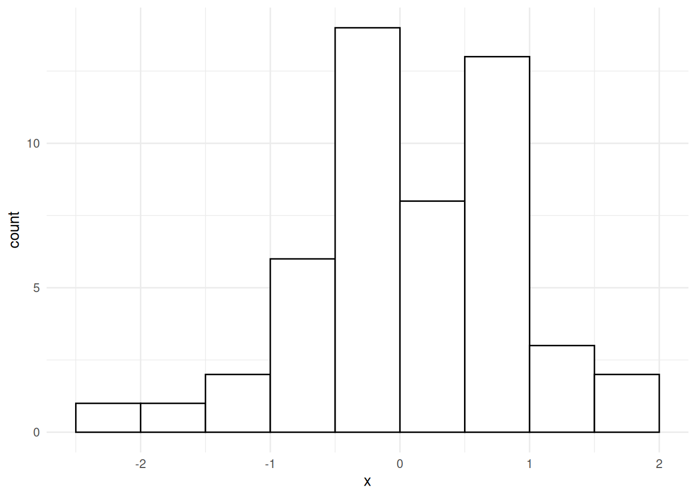
Figure 7.9: Angepasstes Histogramm, mittels ggplot2 erstellt.
7.3.3.1 Unterschiedliche Anzahl der Gruppen
Es ist eigentlich nicht überraschend, dass die Gestalt eines Histogramms bei identischen Daten sehr wesentlich von der Anzahl der Gruppen („bins“) abhängt.
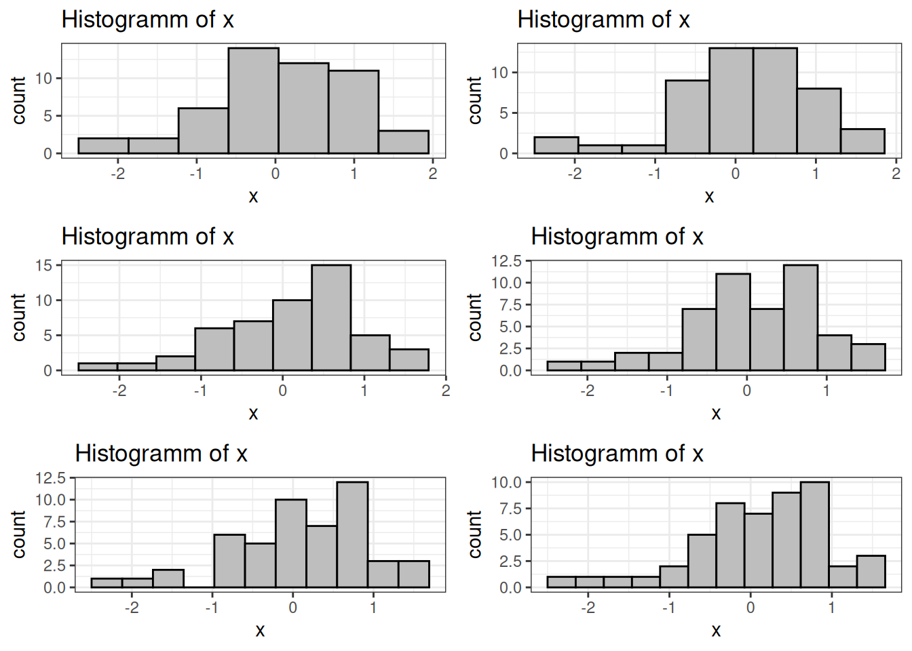
Figure 7.10: Identische Daten, aber eine unterschiedliche Anzahl von Gruppen (“bins”) (bins = \(\{7, 8, 9, 10, 11, 12\}\)).
7.3.3.2 Unterschiedliche untere Grenzen
Überraschend ist vielleicht Folgendes: Selbst wenn die Anzahl der Gruppen und die Gruppenbreite konstant bleibt, kann die Gestalt eines Histogramms bei identischen Daten wesentlich von der unteren Grenze der ersten Gruppe (bzw. von der oberen Grenze der letzten Gruppe) abhängen!
Als Beispiel wollen wir einen bekannten Datensatz verwenden, der die Schneehöhen in Inches aus 63 hintereinander folgenden Wintern auflistet, gemessen in Buffalo im Bundesstaat New York, USA (Eine detailliertere Behandlung dieses Beispiels finden Sie auch auf S. 11 im Abschnitt „Histogramme lassen sich weiter verfeinern“ (Kockelkorn 2012) oder (Arens et al. 2017, Kapitel 18, S. 206 ff.) (auch als EBook in der FH-SWF verfügbar, Stand Oktober 2019):
sHoehe <- c(25.0 , 39.8 , 39.9 , 40.1 , 46.7 , 49.1 , 49.6 , 51.1 , 51.6,
53.5 , 54.7 , 55.5 , 55.9 , 58.0 , 60.3 , 63.6 , 65.4 , 66.1,
69.3 , 70.9 , 71.4 , 71.5 , 71.8 , 72.9 , 74.4 , 76.2 , 77.8,
78.1 , 78.4 , 79.0 , 79.3 , 79.6 , 80.7 , 82.4 , 82.4 , 83.0,
83.6 , 83.6 , 84.8 , 85.5 , 87.4 , 88.7 , 89.6 , 89.8 , 89.9,
90.9 , 97.0 , 98.3 , 101.4 , 102.4 , 103.9 , 104.5 , 105.2 , 110.0,
110.5 , 110.5 , 113.7 , 114.5 , 115.6 , 120.5 , 120.7 , 124.7 , 126.4)
df <- data.frame(x = sHoehe)Wir wollen nun fünf Histogramme erstellen, die sich lediglich in der Position der unteren Grenze der ersten Gruppe unterscheiden (sowohl Anzahl der Gruppen als auch Gruppenbreite bleiben dabei konstant):
## Warning: Computation failed in `stat_bin()`:
## 'from' must be of length 1
## Computation failed in `stat_bin()`:
## 'from' must be of length 1
## Computation failed in `stat_bin()`:
## 'from' must be of length 1
## Computation failed in `stat_bin()`:
## 'from' must be of length 1
## Computation failed in `stat_bin()`:
## 'from' must be of length 1
## Computation failed in `stat_bin()`:
## 'from' must be of length 1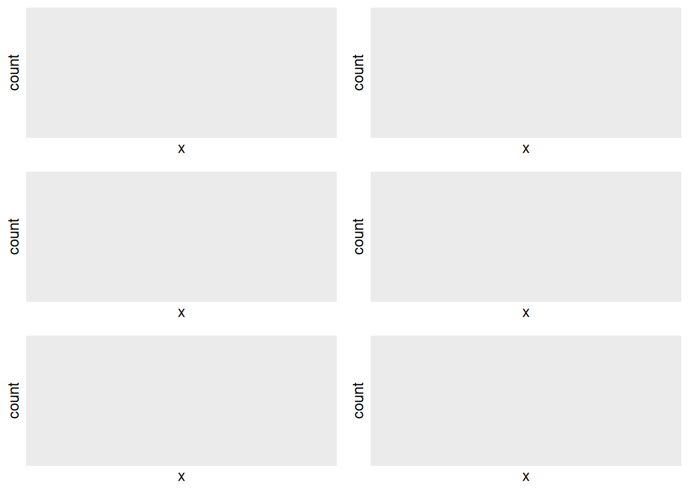
Figure 7.11: Unterschiedliche untere Grenzen \(b\) der jeweils ersten Gruppe: \(b = \{16, 18, 20, 22, 24\}\).
Die Gestalt der fünf Histogramme ist sehr unterschiedlich, obwohl alle auf denselben Daten basieren; auch die Anzahl der Gruppen und die Gruppenbreiten sind identisch! Dies wird auch deutlich, wenn die fünf Histogramme in einer Grafik als Überlagerung dargestellt werden:
transparenz <- 0.2
p <- ggplot(df, aes(x))
for(b in seq(16, 24, by=2)) {
p <- p + geom_histogram(binwidth=10, boundary=b, alpha=transparenz)
transparenz <- transparenz+0.1
}
p + labs(title = "Überlagerung der fünf Histogramme")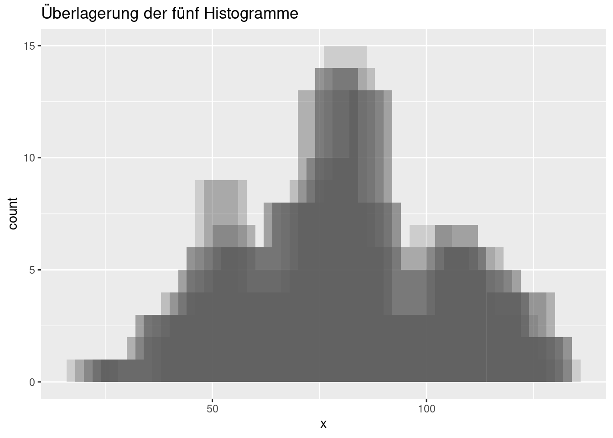
Figure 7.12: Überlagerung der fünf Histogramme.
7.3.3.3 Kerndichteschätzer geom_density()
In der Überlagerung der fünf Histogramme scheint nun eine Struktur erkennbar, die in den einzelnen Histogrammen nicht so ersichtlich ist. Hier helfen oft Kerndichteschätzer wie geom_density(), die das Histogramm glätten und ein stetiges Bild des Histogramms vermitteln.
Damit wir geom_density() anwenden können, müssen wir aes(x, stat(density)) statt aes(x) in ggplot() angeben. Statt der Anzahl (count) wird nun die Dichte (density) auf der y-Achse im Histogramm aufgetragen. Die Daten (Schneehöhen) übernehmen wir unverändert, ebenso die Gruppenbreite 10; die untere Grenze \(b\) der ersten Gruppe legen wir auf den Wert 16 fest:
ggplot(df, aes(x, stat(density))) +
geom_histogram(binwidth=10, boundary=16, alpha=0.2) +
geom_density(color="blue", size=1)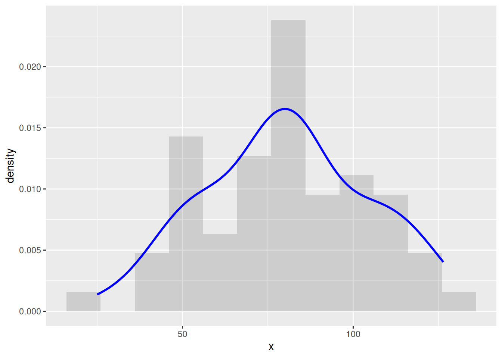
Figure 7.13: (ref:geom_dens)
(ref:geom_dens) Histogramm mit geom_density().
Mit dem Argument adjust können wir die Dichteschätzung relativ zur Gruppenbreite anpassen; adjust = 0.5 nimmt die halbe Gruppenbreite als Grundlage der Schätzung:
ggplot(df, aes(x, stat(density))) +
geom_histogram(binwidth=10, boundary=16, alpha=0.2) +
geom_density(color="blue", size=1)+
geom_density(adjust=0.5, color="red", size =1)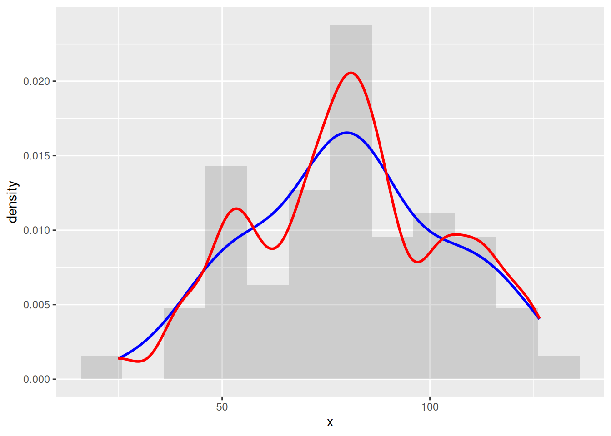
Figure 7.14: (ref:geom_dens2)
(ref:geom_dens2) Histogramm mit geom_density() (rot: adjust = 0.5).
Aus meiner Sicht wird die Funktionsweise des Dichteschätzers geom_density() noch deutlicher, wenn man die Überlagerung der Histogramme zugrunde legt:
transparenz <- 0.2
p <- ggplot(df, aes(x, stat(density)))
for(b in seq(16, 24, by=2)) {
p <- p + geom_histogram(binwidth=10, boundary=b, alpha=transparenz)
transparenz <- transparenz+0.1
}
p <- p + geom_density(color="blue", size=1)+
geom_density(adjust=0.5, color="red", size =1)
p +
theme_bw() +
labs(title = "Überlagerung der Histogramme mit Dichteschätzer",
subtitle ="Data Science, J. Willms")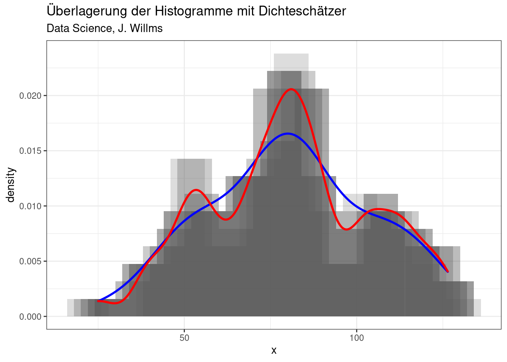
Figure 7.15: (ref:geom_dens3)
(ref:geom_dens3) Überlagerung und Kerndichteschätzer.
7.3.4 Zentraler Grenzwertsatz
Als nächstes Beispiel wollen wir die Konvergenzaussage des zentralen Grenzwertsatzes anhand eines elementaren Beispiels visualisieren. Abgesehen von dnorm(), der Dichtefunktion der Normalverteilung, wollen wir lediglich die Funktion sample() benutzen.
Als Erstes wollen wir einen zufälligen Wert x erzeugen, der mit Wahrscheinlichkeit 2/3 den Wert 0 und mit Wahrscheinlichkeit 1/3 den Wert 1 annimmt:
set.seed(1)
x1 <- sample(c(0,0,1),1)Die (theoretische) Varianz der zugrundeliegenden zweiwertigen Zufallsvariablen \(X\) ist leicht berechnet: \(Var(X)= 2/3 \cdot 1/9 + 1/3 \cdot 4/9 = 2/9\).
Als Nächstes wollen nicht einen, sondern n = 300 solcher Datensätze erzeugen:
n <- 300
x <- sample(c(0,0,1),n, replace = TRUE)x ist also ein Vektor mit 300 Elementen und jedes Element hat mit Wahrscheinlichkeit 2/3 den Wert 0 und mit Wahrscheinlichkeit 1/3 den Wert 1:
x## [1] 1 0 0 0 1 1 0 0 1 1 0 0 0 0 0 0 0 1 0 1 0 0 0 0 0 0 0 0 0 0 0 1 0 1 0 0 0
## [38] 0 1 0 0 1 0 0 0 1 0 0 1 1 0 0 0 0 0 0 0 0 0 0 1 1 0 1 1 0 1 1 0 0 0 0 1 0
## [75] 1 0 0 0 0 0 0 0 1 0 0 0 1 1 1 0 0 0 1 0 0 1 1 1 0 0 0 0 1 1 0 1 0 0 0 0 1
## [112] 1 0 0 0 1 0 1 1 0 0 0 0 0 0 0 0 0 0 1 0 1 1 0 1 1 0 0 0 0 0 0 1 1 1 1 1 0
## [149] 1 0 1 0 0 1 0 0 0 0 0 0 1 0 0 1 1 1 1 0 1 0 1 0 0 0 0 1 0 0 0 1 1 0 0 0 0
## [186] 0 1 0 0 1 0 0 0 1 0 0 1 1 0 0 0 0 0 0 0 0 0 0 0 0 0 0 0 0 0 0 0 0 0 0 0 0
## [223] 0 1 0 0 0 0 1 0 1 0 0 0 0 1 0 1 0 0 0 1 0 1 0 0 1 1 0 0 1 0 0 0 1 0 0 0 0
## [260] 0 0 0 0 0 0 0 1 0 1 0 1 0 0 0 0 1 1 1 1 0 0 0 0 0 1 0 1 1 1 0 0 0 1 1 0 0
## [297] 0 1 1 0Als Nächstes wollen wir den Durchschnitt sn unserer zufälligen Daten x betrachten. Nach dem Gesetz der großen Zahlen sollte sn ungefähr den Wert 1/3 haben:
sn <- sum(x)/n # == mean(x)
sn## [1] 0.3066667sn kann als Realisierung einer Zufallsvariable \(S_n\) aufgefasst werden. Für große n macht der zentrale Grenzwertsatz eine Aussage über die Verteilung von \(S_n\): Sie sollte ungefähr normalverteilt sein. Dies wollen wir visuell mithilfe einer Simulation überprüfen. Dazu müssen wir mehrfach (in unserem Beispiel fünfzigmal) und stochastisch unabhängig voneinander solche zufälligen Datensätze x erzeugen, sn berechnen und grafisch darstellen.
Anzahl <- 50 # gibt an, wie oft sn realisiert werden soll
s <- replicate(Anzahl, sum(sample(c(0,0,1),n, replace = TRUE))/n)Beantworten Sie folgende Frage:
- Welche Verteilung hat die Zufallsvariable \(n \dot S_n\)?
replicate(n, expression) ruft sapply() auf und führt n-mal den übergebenen Ausdruck expression aus und speichert das Ergebnis in einer möglichst einfachen Datenstruktur (In unserem Beispiel ist dies ein Vektor.). In unserem Beispiel enthält der Vektor s nun 50 Realisierungen der Zufallsvariable \(S_n\).
str(s)## num [1:50] 0.313 0.303 0.347 0.367 0.317 ...Das arithmetische Mittel von s sollte annähernd 1/3 betragen und var(s) müsste ungefähr gleich 2/9n sein:
mean(s)## [1] 0.3365333var(s) - 2 / (9*n)## [1] 3.475132e-05Bearbeiten Sie folgende Aufgabe:
- Erzeugen Sie den Vektor
s, ohne die Funktionreplicate()zu benutzen (Hinweis:sapply()).
Mithilfe eines Histogramms können wir die Mittelwerte s visualisieren:
df <- data.frame(x=s)
# Zeichne Histogramm
ggplot(df, aes(x, stat(density))) +
geom_histogram(bins = 8, alpha = 0.4) +
geom_density(color = "blue", size = 1.2)+
labs(title = "Konvergenz gegen die Normalverteilung?",
subtitle ="anzahl=50, n=300, J. Willms") +
theme_bw()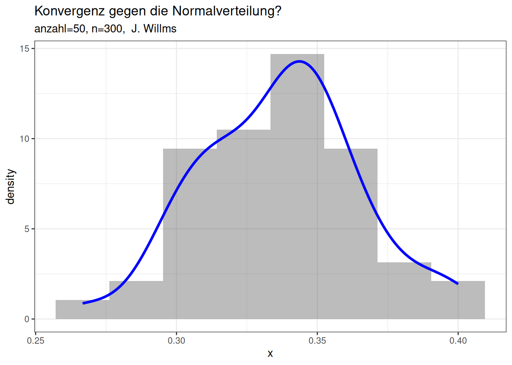
Figure 7.16: (ref:geom_dens4)
(ref:geom_dens4) Histogramm von s.
Die mit n multiplizierten so erzeugten s-Werte sind binomialverteilt. Nach dem zentralen Grenzwertsatz kann für große n diese Binomialverteilung durch eine Normalverteilung approximiert werden. Also fügen wir im Plot in einer zusätzlichen Ebene als Vergleich die Dichte der entsprechenden Normalverteilung hinzu. In unserem Fall ist dies die Normalverteilung N(n/3; 2/9n).
Beantworten Sie folgende Frage:
- Wieso
n/3und2/9n?
Um flexibler zu sein, kapseln wir die Zeichenbefehle in einer Funktion:
zeichne <- function(df, nGruppen, n=300){
supStr <- sprintf("anzahl=%d, n=300, J. Willms", length(df$x))
p <- ggplot(df, aes(x)) +
geom_histogram(aes(x, stat(density)), bins=nGruppen, alpha=0.4)+
geom_density(color="blue", size =1.2) +
labs(title = "Konvergenz gegen die Normalverteilung?", subtitle = supStr) +
stat_function(fun = dnorm, args= list(mean=1/3, sd=sqrt(2/(9*n))),
colour = "red", size = 1.1) +
theme_bw()
return(p)
}Da der Untertitel angepasst werden muss, entspricht er dem char-vektor subStr, der mithilfe der Funktion sprintf() gemäß den übergebenen Argumenten gesetzt wird. sprintf() wird anlog wie die C-Funktion sprintf() (und somit auch wie printf()) aufgerufen.
Vergleichen wollen wir nun für die Anzahl 50 und die Anzahl 2000 die entsprechenden Histogramme (mit der Anzahl der Gruppen von 10 und 18), die durch folgende Anweisungen erzeugt werden:
set.seed(1)
n <- 300
x <- sample(c(0,0,1),n, replace = TRUE)
Anzahl <- 50 # gibt an, wie oft sn realisiert werden soll
s <- replicate(Anzahl, sum(sample(c(0,0,1),n, replace = TRUE))/n)
df <- data.frame(x=s)
z1 <- zeichne(df,10,n)
set.seed(1)
n <- 300
x <- sample(c(0,0,1),n, replace = TRUE)
Anzahl <- 2000 # gibt an, wie oft sn realisiert werden soll
s <- replicate(Anzahl, sum(sample(c(0,0,1),n, replace = TRUE))/n)
df <- data.frame(x=s)
z2 <- zeichne(df,18,n)
gridExtra::grid.arrange(z1, z2, ncol = 2)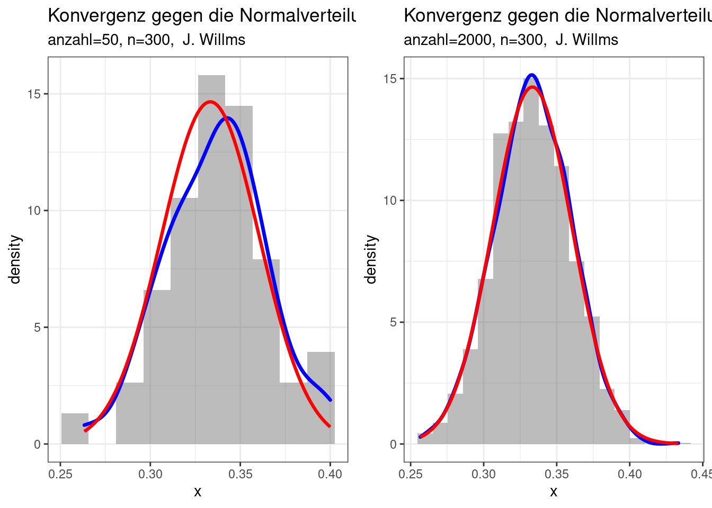
Figure 7.17: Annäherung an die Normalverteilung.
Abbildung \(\ref{fig:annaeh-norm-plot}\) zeigt in der Tat, dass die beiden Verteilungen recht gut durch die Normalverteilung
N(n/3; 2/9n) approximiert werden können.
Bearbeiten Sie folgende Aufgabe:
- Für \(n= 2,3,4,5\) überprüfen Sie in ähnlicher Weise durch eine Simulation, wie sich die Summe \(n\) identisch verteilter und unabhängiger Zufallsvariablen verhält, die
N(0; 1)verteilt sind.
7.3.5 Quantilplot
Ein Quantilplot (siehe z.B. (Kockelkorn 2012, S. 173)) bietet die Möglichkeit, zwei Verteilungen auf Gleichheit visuell zu überprüfen. In einem Quantilplot werden die jeweiligen \(\alpha\)-Quantile zweier Verteilungen in einem Koordinatensystem gegeneinander aufgetragen. Liegen die gezeichneten Punkte annähernd auf einer Geraden, dann liegt die Vermutung nahe, dass es sich um ähnliche Verteilungen handelt. Wir wollen sogenannte \(NP-Plots\) benutzen, die eine Verteilung mit der Normalverteilung vergleichen.
Als einführendes Beispiel wollen wir einen Datensatz verwenden, von dem wir wissen, dass er N(4; 4)-verteilt ist.
Wir erhalten folgenden NP-Plot:
set.seed(0)
s <- rnorm(400 ,mean=4, sd=2) # N(4;4)-verteilt
ggplot(data.frame(s), aes(sample = s)) +
stat_qq() + stat_qq_line() +
labs(title = "NP-PLot", subtitle = "N(4;4)-verteilt")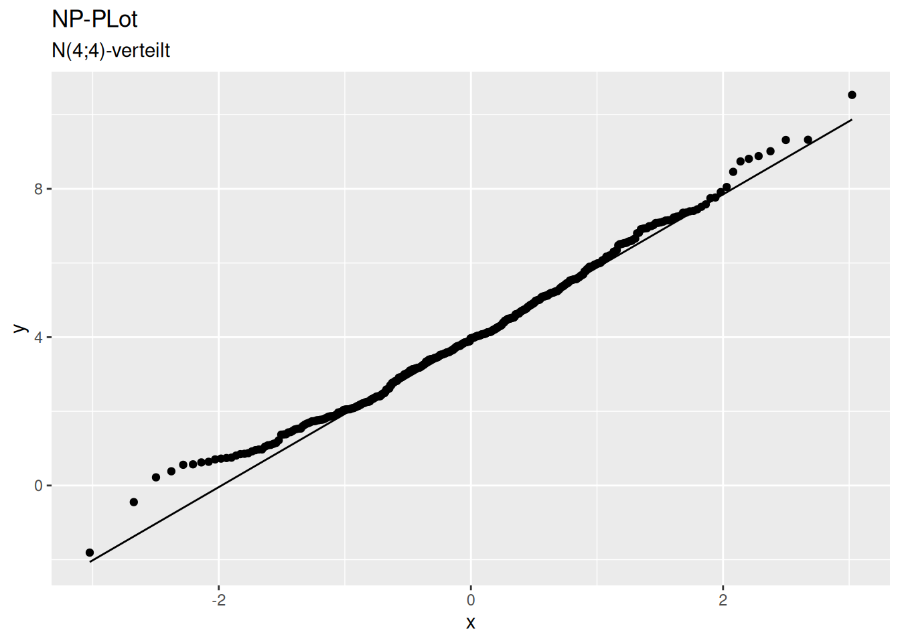
Figure 7.18: NP-Plot von N(4; 4) verteilten Daten.
Im Idealfall müssten alle Punkte auf einer Geraden liegen. Unser Beispiel ist „zufällig“ recht schlecht: Werden in unserem konkreten Beispiel andere „Seed“-Werte als 0 gewählt, ergeben sich sehr oft bessere Übereinstimmungen. Abweichungen finden sich im Allgemeinen häufig bei sehr kleinen oder sehr großen Quantil-Werten. Eine bessere Übereinstimmung erhält man in der Regel auch, wenn die Anzahl der Daten erhöht wird.
Aus dem y-Achsenabschnitt der eingezeichneten Geraden kann der Erwartungswert und aus der Steigung der Geraden kann die Streuung der theoretisch ermittelten Normalverteilung, die am „besten“ zu dem Datensatz passt, abgelesen werden. Unabhängig vom „Seed“ sollten in unserem Beispiel stets ungefähr 1/3 als Erwartungswert und 2 als Steigung abzulesen sein.
Bearbeiten Sie folgende Aufgabe:
- Erstellen Sie für unterschiedliche Seeds und unterschiedliche Datensatzgrößen entsprechende NP-Plots für Daten, die
N(2; 9)-verteilt sind.
Als Nächstes wollen wir die Daten aus dem letzten Kapitel durch einen NP-Plot visualisieren.
set.seed(1)
n <- 300
x <- sample(c(0,0,1),n, replace = TRUE)
s50 <- replicate(50, sum(sample(c(0,0,1),n, replace = TRUE))/n)
ggplot(data.frame(s50), aes(sample = s50))+
stat_qq() + stat_qq_line() +
labs(title = "NP-PLot", subtitle = "Anzahl=50")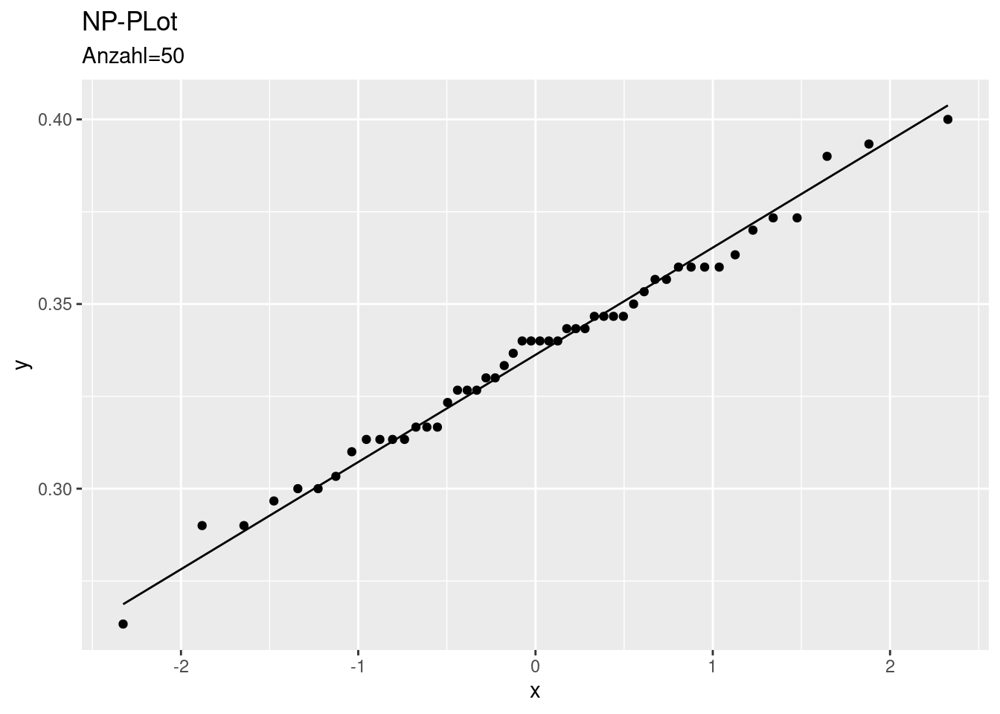
Figure 7.19: NP-Plot mit 50 Werten.
Unabhängig vom „Seed“ sollten stets ungefähr 1/3 als Erwartungswert und \(\sqrt{(2⁄9n)}\) (ca. 0.027 für den benutzten Wert n= 300) als Steigung abzulesen sein. Ein ähnliches Bild ergibt sich auch für den zweiten Datensatz aus dem vorherigen Kapitel:
set.seed(1)
x <- sample(c(0,0,1),n, replace = TRUE)
s2000 <- replicate(2000, sum(sample(c(0,0,1),n, replace = TRUE))/n)
ggplot(data.frame(s2000), aes(sample = s2000))+
stat_qq() + stat_qq_line() +
labs(title = "NP-PLot", subtitle = "Anzahl=2000")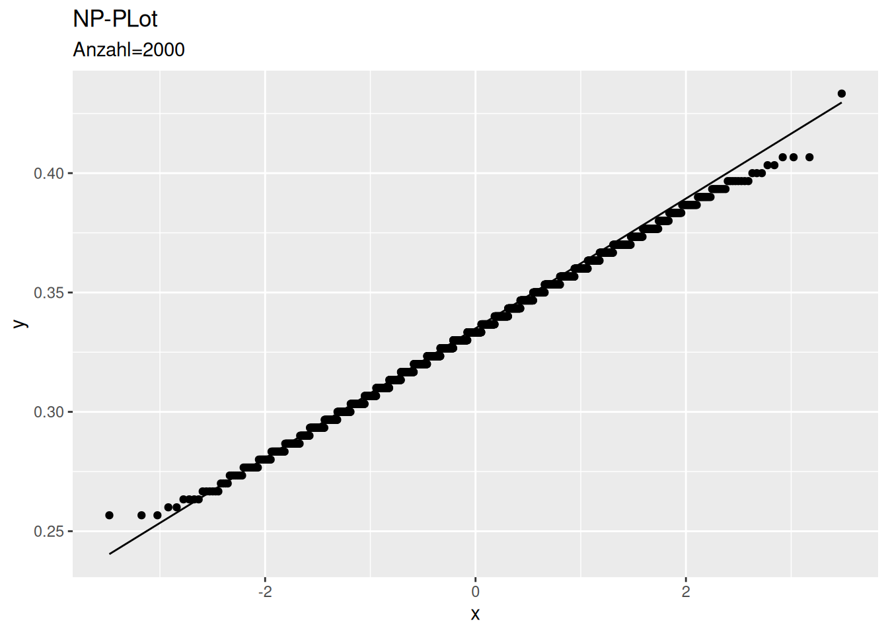
Figure 7.20: NP-Plot mit 2000 Werten.
7.4 Fallstudie 4: Datenimport, -manipulation und speicherung
Lernziel:
- Nach Durchführung der Fallstudie 4 sollen Sie Daten in R importieren, modifizieren (manipulieren) und anschließend als CSV-Dateien speichern können.
7.4.1 Aufgabe 1
In dieser Fallstudie wollen wir uns mit dem Import und der Manipulation von Daten beschäftigen. Laden Sie den Diamonds_modified.csv Datensatz herunter; dieser basiert auf dem Datensatz diamonds (Wickham 2016).
Lesen Sie diesen Datensatz in R ein, indem Sie die folgenden Funktionen nutzen:
read.csv(),read.csv2()undread.table().
Was müssen Sie beim Gebrauch der Funktionen beachten? Welche Unterschiede fallen Ihnen auf, wenn Sie diese Funktionen anwenden? Welche Funktion präferieren Sie und warum?
7.4.2 Aufgabe 2
Schauen Sie sich die einzelnen Variablen des eingelesenen Datensatzes genau an, d.h.
schauen Sie sich die (inhaltliche) Beschreibung der Variablen (
?diamonds) an,untersuchen Sie die Struktur der Variablen und
untersuchen Sie die Werte der Variablen.
Was fällt Ihnen auf?
Modifizieren Sie die Variablen des
Diamonds_modified.csvDatensatzes basierend auf Ihren Beobachtungen aus Aufgabenteil a). (Hinweis: Siehefactor()undstringr::str_replace()(Wickham 2022).)Vergleichen Sie nun den von Ihnen modifizierten Datensatz mit dem Datensatz
ggplot2::diamonds(Wickham 2016). Können Sie die beiden Datensätze problemlos miteinander vergleichen? Warum ja oder warum nicht? Wenn ein Vergleich nicht so ohne Weiteres möglich ist: Was müssen Sie tun, um die Datensätze miteinander vergleichen zu können?Wie Sie der Beschreibung (
?diamonds) entnehmen können, ist die Variablepricein US Dollar angegeben (Wickham 2016). Transfomieren Sie die Variable, sodass der Preis die Einheit Euro trägt.
7.4.3 Aufgabe 3
Führen Sie die folgenden Arbeitsschritte aus:
Extrahieren Sie die ersten 50 Einträge des
diamondsDatensatzes (Wickham 2016).Entfernen Sie die Spalte
table.Bennen Sie die Spaltennamen in “Karat_Gewicht”, “Qual_Schnitt”, “Farbe”, “Klarheit”, “proz_Tiefe”, “Preis”, “Laenge”, “Breite” und “Tiefe” um.
Speichern Sie den modifizierten Datensatz als CSV-Datei mit dem Namen “Diamonds50_modified.csv”. Nutzen Sie die Funktion
write.csv(). Welche Argumente müssen Sie definieren?Lesen Sie die Datei “Diamonds50_modified.csv” in R ein. Entspricht die eingelesene Datei der gespeicherten Datei?
7.5 Fallstudie 5: Shapiro-Wilk-Test und Kolmogorov-Smirnov-Test
7.5.1 Shapiro-Wilk-Test
In dieser Fallstudie wollen wir zuerst exemplarisch auf den Shapiro-Wilk-Test eingehen. Der Shapiro-Wilk-Test ist ein statistischer Signifikanztest, der die Hypothese überprüft, ob eine Normalverteilung vorliegt.
Die Nullhypothese \(H_0\) lautet: Die Daten der Grundgesamtheit sind normalverteilt. Die Alternativhypothese \(H_1\) lautet somit: Die Daten der Grundgesamtheit sind nicht normalverteilt.
Als Signifikanzniveau wählen wir zunächst \(\alpha = 0.05\) (Dies ist ein üblicher, aber trotzdem sehr willkürlicher Wert.).
Es ist in R sehr leicht, den Shapiro-Wilk-Test durchzuführen. Viel schwieriger ist es, die richtigen Schlüsse aus den berechneten Testergebnissen zu ziehen.
Zuerst wollen wir den Pseudo-Zufallsgenerator initialisieren:
set.seed(17122019)Als Nächstes wollen wir eine Stichprobe bestehend aus 40 Elementen aus einer normalverteilen Grundgesamtheit testen:
stichprobe <- rnorm(40, mean = 5, sd = 3)
shapiro.test(stichprobe)##
## Shapiro-Wilk normality test
##
## data: stichprobe
## W = 0.97987, p-value = 0.6846Wie wir sehen, ist der p-Wert recht groß; wir haben also keinen Grund, die Nullhypothese \(H_0\) abzulehnen. Selbst ein großer p-Wert belegt nicht, dass \(H_0\) wahr ist. Dies Aussagekraft des Ergebnisses ist also in diesem Fall recht schwach.
Bei einer Stichprobe, die aus einer auf [0, 1] gleichverteilten Grundgesamtheit stammt, sollten die Testergebnisse anders aussehen:
stichprobe <- runif(40)
shapiro.test(stichprobe)##
## Shapiro-Wilk normality test
##
## data: stichprobe
## W = 0.88576, p-value = 0.0007558Da der p-Wert unter dem gewählten Signifikanzniveau \(\alpha\) liegt, ist die Nullhypothese \(H_0\) in diesem Fall abzulehnen. Wir können aber nicht ausschließen, dass \(H_0\) trotzdem richtig ist! Wird \(H_0\) aufgrund des Tests (fälschlicherweise) abgelehnt, obwohl \(H_0\) wahr ist (Fehler 1. Art), dann repräsentiert die Stichprobe ein sehr seltenes Ereignis, das höchstens mit Wahrscheinlichkeit \(\alpha\) eintritt. Daraus lässt sich aber nicht ableiten, dass die Wahrscheinlichkeit, dass \(H_0\) wahr ist, kleiner als das gewählte Signifikanzniveau \(\alpha\) ist (Leider wird dieser Schluss fälschlicherweise sehr oft gezogen.).
Im Folgenden sehen wir, dass die Funktion shapiro.test() eine Liste mit vier Elementen zurückgibt und dass p.value dem p-Wert entspricht:
sTest <- shapiro.test(stichprobe)
str(sTest)## List of 4
## $ statistic: Named num 0.886
## ..- attr(*, "names")= chr "W"
## $ p.value : num 0.000756
## $ method : chr "Shapiro-Wilk normality test"
## $ data.name: chr "stichprobe"
## - attr(*, "class")= chr "htest"7.5.2 Funktionen zur mehrfachen Wiederholung des Shapiro-Wilk-Tests
Wir wollen als Nächstes für unterschiedliche Stichprobengrößen ähnliche Tests mehrfach wiederholen und jeweils untersuchen, wie oft die entsprechende Nullhypothese verworfen wird. Dafür verwenden wir vier Funktionen. Die erste Funktion werden wir benutzen, um unsere erhaltenen Ergebnisdaten zu visualisieren:
myPlot <- function(titel, nWerte, Anteil){
g <- ggplot(data.frame(nWerte, Anteil), aes(x = nWerte, y = Anteil)) +
ggtitle(titel, subtitle =
expression('H'[0]*': Normalverteilung liegt vor')) +
ylab(expression('H'[0]*' verworfen')) +
xlab("Stichproben-Größe: n") +
scale_y_continuous(labels = scales::percent)
return(g)
}Wir haben hier den Funktionsaufruf scale_y_continuous(labels = scales::percent) benutzt, um die y-Achse mit den entsprechenden Prozentzahlen zu skalieren. Neu ist auch
expression('H'[0]*': Normalverteilung liegt vor')).
Damit wird der folgende Text im Plot erzeugt: Der mit [] umschlossene Buchstabe wird also tiefergestellt (Um einen Buchstaben hoch zu stellen, wird ^ statt [] benutzt.). Auf die genaue Syntax wollen wir an dieser Stelle nicht eingehen, sondern lediglich ein weiteres Beispiel anführen, das in Abbildung \(\ref{fig:ggplot-expression}\) resultiert:
ggplot() + ggtitle(expression('Beispiel: A'['1,2']* ' und B' ^'1,2'*
' und x' ^ 'n'))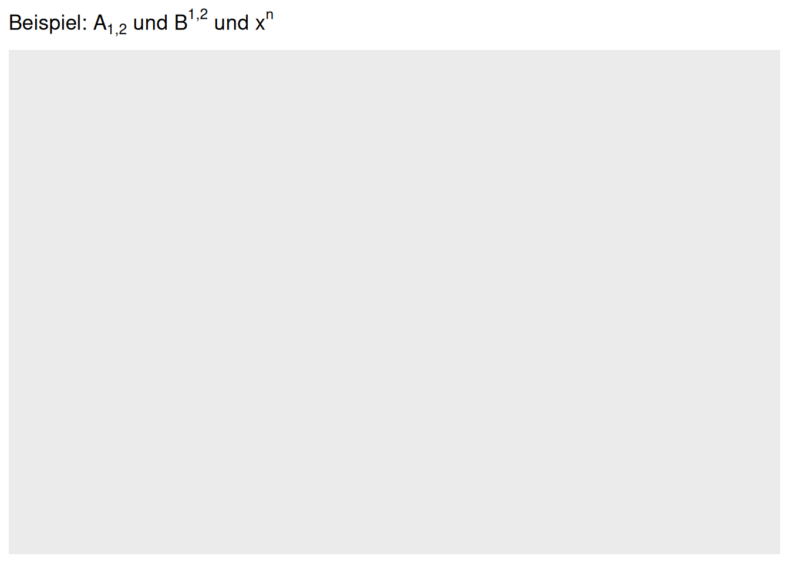
Figure 7.21: Leerer Plot mit tiefer und höher gestellten Zahlen und Buchstaben im Titel.
Die zweite FunktionpShapiro(n) erzeugt in [-1,1] gleichverteilte Stichproben der Größe n, führt den Shapiro-Wilk-Test durch und gibt den entsprechenden p-Wert zurück. Wollen wir eine andere Wahrscheinlichkeitsverteilung zugrunde legen, dann muss diese Funktion angepasst werden.
# Shapiro-Wilk-Test
# Stichproben gleichverteilt
# n: Stichprobengröße
pShapiroTest <- function(n){
stichprobe <- runif(n, min=-1, max=1)
h <- shapiro.test(stichprobe)
return(h$p.value)
}Die dritte Funktion replicateTest() ruft nTest-mal die übergebene Funktion FUN(n) auf und gibt den Anteil zurück, wie oft der entsprechende p-Wert unter dem Signifikanzniveau \(\alpha\) gelegen hat.
# n: Stichprobengröße
# FUN: Testfunktion (Default: pShapiroTest)
# nTest: Anzahl der Tests (Wiederholungen)
# alpha: entspricht dem Signifikanzniveau
replicateTest <- function(n, FUN=pShapiroTest, nTest, alpha){
res <- replicate(nTest, FUN(n))
return(sum(res <= alpha)/nTest)
}In der vierten Funktion testShapiro() schließlich wird festgelegt:
die Stichprobengröße
nwelcher Test benutzt werden soll (der Defaultwert ist die Funktion
pShapiroTest())wie oft (bei gegebener Stichprobengröße) ein Test ausgeführt werden soll (
nTest)das Signifikanzniveau
alpha
und es wird die Funktion replicateTest() aufgerufen:
testShapiro <- function(n){
replicateTest(n, FUN=pShapiroTest, nTest=1000, alpha=0.05)
}7.5.3 Testgüte des Shapiro-Wilk-Tests bei Gleichverteilung
Nun können wir sehr leicht die Testgüte des Shapiro-Wilk-Tests untersuchen und die Ergebnisse visuell darstellen. Nach wie vor lautet die Nullhypothese \(H_0\): Die Daten der Grundgesamtheit sind normalverteilt. Die Alternativhypothese H1 lautet somit: Die Daten der Grundgesamtheit sind nicht normalverteilt. Wir wissen, dass die Stichproben aus einer gleichverteilten Grundgesamtheit stammen, also ist die Nullhypothese \(H_0\) falsch. Wir wollen nun untersuchen, wie oft die Nullhypothese \(H_0\) durch den Test tatsächlich verworfen wird. Welche qualitativen Ergebnisse erwarten wir? Für relativ große Stichprobengrößen sollte ein Test in der Lage sein, in fast 100% der Fälle die Nullhypothese \(H_0\) zu verwerfen. Je kleiner die Stichprobengröße hingegen ist, desto öfter erwarten wir, dass aufgrund des p-Wertes die Nullhypothese \(H_0\) nicht abgelehnt wird. Dies können wir nun leicht nachprüfen. Als Stichprobengröße n wählen wir
n = 3, 4, 5,…,100:
set.seed(17122019)
nWerte <- 3:100
AnteilShapiro <- sapply(nWerte, testShapiro)
myPlot("Shapiro-Wilk-Test: gleichverteilte Stichproben (nTest=1000)",
nWerte, AnteilShapiro)+
geom_point() + geom_smooth()## `geom_smooth()` using method = 'loess' and formula 'y ~ x'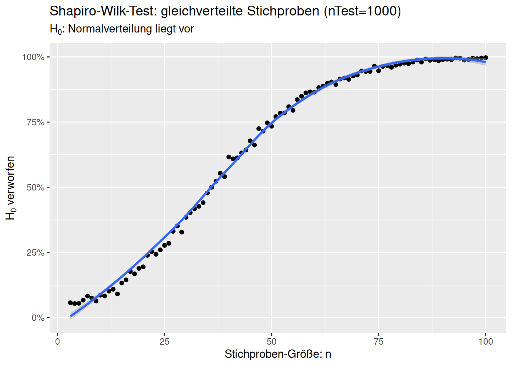
Figure 7.22: Testgüte des Shapiro-Wilk-Tests.
Ändert sich der Plot wesentlich, wenn die Untersuchung mit anderen zufälligen Werten wiederholt wird? Auch dies können wir sofort nachprüfen.
AnteilShapiro2 <- sapply(nWerte, testShapiro)
myPlot("Shapiro-Wilk-Test: gleichverteilte Stichproben (nTest=1000)", nWerte, AnteilShapiro) +
geom_point() + geom_smooth() +
geom_point(aes(x = nWerte, y = AnteilShapiro2), color = "green")## `geom_smooth()` using method = 'loess' and formula 'y ~ x'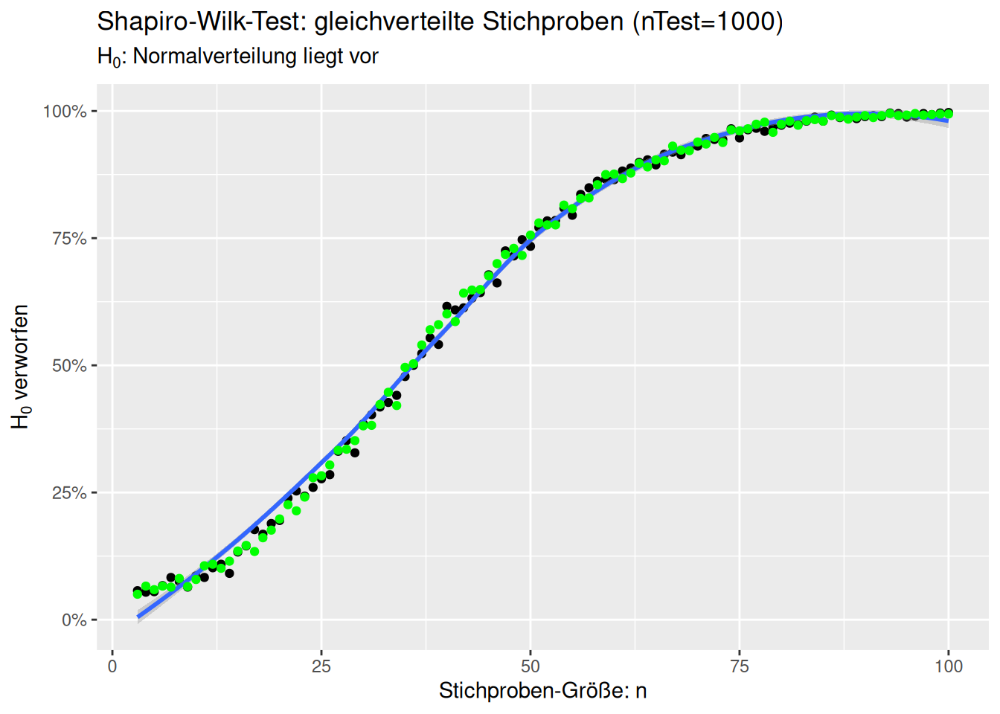
Figure 7.23: Wiederholung mit anderen zufälligen Werten.
Die neu hinzu gekommenen Daten wurden in den letzten Plot als grüne Punkte eingefügt. Wie man sieht, gibt es nur geringfügige Abweichungen.
Bearbeiten Sie folgende Aufgaben:
Wiederholen Sie die Untersuchung mit einer \(\chi^2\)-Verteilung (Chi-Quadrat-Verteilung) mit zwei Freiheitsgraden anstelle der Gleichverteilung. Wie unterscheiden sich die Ergebnisse? Plotten Sie zuerst die \(\chi^2\)-Verteilung mit zwei Freiheitsgraden.
Wiederholen Sie die Untersuchung mit einer Normalverteilung anstelle der Gleichverteilung. Was ändert sich nun grundsätzlich? Welchen Einfluss haben nun die Stichprobengröße
nund das Signifikanzniveaualpha. Testen Sie dies!
7.5.4 Vergleich mit dem Kolmogorov-Smirnov-Test
Mithilfe unserer oben definierten Funktionen ist es nun sehr leicht, den Shapiro-Wilk-Test shapiro.test() durch den Kolmogorov-Smirnov-Test ks.test() zu ersetzen und beide Tests direkt zu vergleichen.
pKSTest <- function(n){
stichprobe <- runif(n, min=-1, max=1)
h <- ks.test(stichprobe, "pnorm")
return(h$p.value)
}
testKS <- function(n){
replicateTest(n, FUN=pKSTest, nTest=1000, alpha=0.1)
}set.seed(17122019)
nWerte <- 3:100
AnteilKS <- sapply(nWerte, testKS)Ähnlich wie im vorherigen Abschnitt können wir die berechneten Anteile (AnteilKS), wie oft die Nullhypothese \(H_0\) verworfen wurde, visualisieren:
df <- data.frame(nWerte, AnteilKS)
ggplot(df, aes(x = nWerte, y = AnteilKS))+
geom_point(color = "red")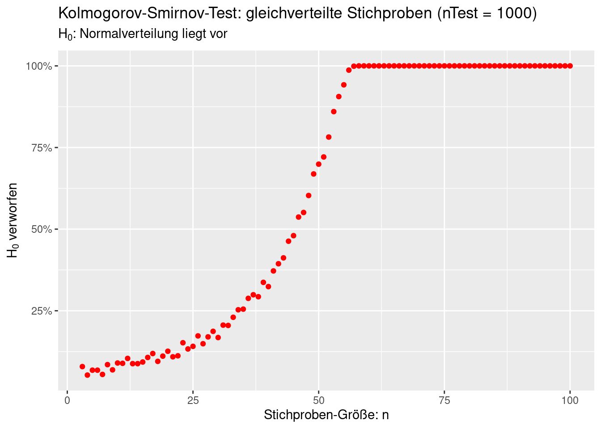
Figure 7.24: Testgüte des Kolmogorov-Smirnov-Tests.
Um die Ergebnisse besser vergleichen zu können, erweitern wir Abbildung 7.22 um die neu berechneten roten Punkte und erhalten Abbildung \(\ref{fig:plot-shapiro-wilk-kolmog}\).
myPlot("Gleichverteilte Stichproben (nTest=1000)",
nWerte, AnteilShapiro) +
geom_point() + geom_smooth() +
geom_point(aes(x = nWerte, y = AnteilKS), color = "red")## `geom_smooth()` using method = 'loess' and formula 'y ~ x'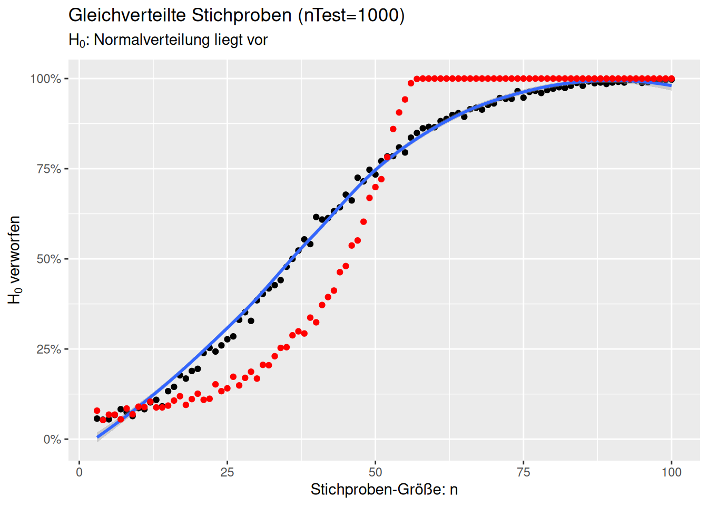
Figure 7.25: Vergleich der Testgüte: Shapiro-Wilk-Test (schwarz) und Kolmogorov-Smirnov-Tests (rot).
Wir können die Ergebnisse auch in Abbildung \(\ref{fig:ggplot-shapiro-wilk2}\) einfügen, sollten dann aber auch eine entsprechende Legende hinzufügen:
myPlot("Gleichverteilte Stichproben (nTest=1000)", nWerte, AnteilShapiro) +
geom_point(aes(color = "Shapiro 1")) + geom_smooth() +
geom_point(aes(x = nWerte, y = AnteilShapiro2, color = "Shapiro 2")) +
geom_point(aes(x = nWerte, y = AnteilKS, color = "KS")) +
labs(color = "Legende")## `geom_smooth()` using method = 'loess' and formula 'y ~ x'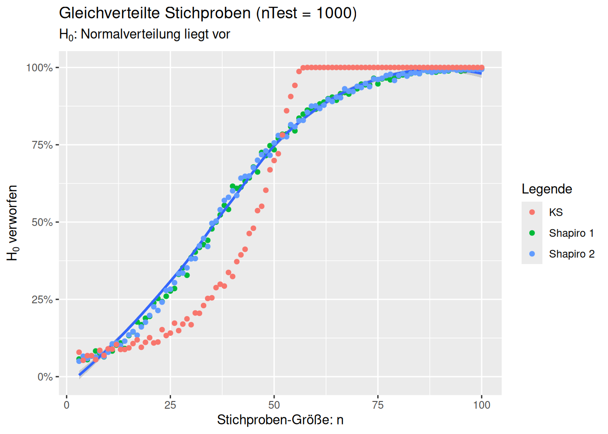
Figure 7.26: Alle Ergebnisse.
In der Tat sehen wir, dass in unserem speziellen Testmodell der Shapiro-Wilk-Test für Stichprobengrößen n \(\leq\) 65 (für n \(\leq\) 60 sogar deutlich besser) besser als der Kolmogorov-Smirnov-Test abschneidet.
Beantworten Sie folgende Frage:
- Wie sieht der Vergleich des Shapiro-Wilk-Tests mit dem Kolmogorov-Smirnov-Test aus für Stichprobengrößen
nzwischen 4 und 100, wenn statt der Gleichverteilung eine \(\chi^2\)-Verteilung (Chi-Quadrat-Verteilung) mit zwei Freiheitsgraden zugrunde gelegt wird?
7.6 Fallstudie 6: Datenanalyse
require(tidyverse)7.6.1 Datenanalyse der x-, y- und z-Werte
Dieser Fallstudie liegt der Datensatz diamonds zugrunde (Wickham 2016). In einer Übung haben wir bereits Auffälligkeiten in der Verteilung der Preis-Variablen aufgedeckt. In dieser Fallstudie wollen wir nach Auffälligkeiten in den x-, y- und z-Variablen suchen und die gefundenen Werte im Datensatz kennzeichnen.
dd <- diamondsBearbeiten Sie folgende Aufgabe:
- Fügen Sie ein weiteres Attribut
nrdem Datensatzddhinzu. Dieses Attribut soll das erste Attribut des Datensatzesddsein und der Zeilennummer entsprechen (Hinweis:dplyr::relocate()(dplyr?)):
nr <- 1:nrow(diamonds)
dd$nr <- nr
dd <- dd %>% relocate(nr)dd ## # A tibble: 53,940 × 11
## nr carat cut color clarity depth table price x y z
## <int> <dbl> <ord> <ord> <ord> <dbl> <dbl> <int> <dbl> <dbl> <dbl>
## 1 1 0.23 Ideal E SI2 61.5 55 326 3.95 3.98 2.43
## 2 2 0.21 Premium E SI1 59.8 61 326 3.89 3.84 2.31
## 3 3 0.23 Good E VS1 56.9 65 327 4.05 4.07 2.31
## 4 4 0.29 Premium I VS2 62.4 58 334 4.2 4.23 2.63
## 5 5 0.31 Good J SI2 63.3 58 335 4.34 4.35 2.75
## 6 6 0.24 Very Good J VVS2 62.8 57 336 3.94 3.96 2.48
## 7 7 0.24 Very Good I VVS1 62.3 57 336 3.95 3.98 2.47
## 8 8 0.26 Very Good H SI1 61.9 55 337 4.07 4.11 2.53
## 9 9 0.22 Fair E VS2 65.1 61 337 3.87 3.78 2.49
## 10 10 0.23 Very Good H VS1 59.4 61 338 4 4.05 2.39
## # … with 53,930 more rows
## # ℹ Use `print(n = ...)` to see more rowsBeantworten Sie folgende Fragen:
Für wie viele Datensätze gilt
x\(\geq\)yund für wie vielex<y? Ändern Sie die einzelnen Datensätze, so dass stetsx\(\geq\)ygilt.Für welche Datensätze gilt:
z>y?
In dieser Fallstudie werden wir erst einmal lediglich die Werte der Variablen x, y und z in unsere Datenanalyse einfließen lassen. Dabei sollen zunächst zwei Aspekte beleuchtet werden:
Gibt es bezüglich der drei Variablen
x,yundzWerte, die nicht definiert oder offensichtlich fehlerhaft sind? Der Datensatz soll entsprechend bereinigt und die ausgeschlossenen Datensätze dokumentiert werden.Gibt es in den so bereinigten Daten noch extrem auffällige
x,yoderzWerte?
7.6.1.1 NA-Werte
Zu Testzwecken wollen wir zuerst den folgenden Datensatz betrachten:
d <- tibble(x = 1:100, y = 2*x, z = x%%7)
d$x[99] <- NA
d$y[22:26] <- NA
d$z[c(23,33)] <- NAUm alle Datenzeilen herauszufinden, die einen NA-Wert enthalten, können wir schreiben:
d %>% filter(is.na(x)|is.na(y)|is.na(z))## # A tibble: 7 × 3
## x y z
## <int> <dbl> <dbl>
## 1 22 NA 1
## 2 23 NA NA
## 3 24 NA 3
## 4 25 NA 4
## 5 26 NA 5
## 6 33 66 NA
## 7 NA 198 1Alternativ können wir auch die Funktion complete.cases() benutzen. Sie gibt einen booleschen Vektor zurück, der angibt, ob eine entsprechende Datenzeile einen NA-Wert enthält:
complete.cases(d)## [1] TRUE TRUE TRUE TRUE TRUE TRUE TRUE TRUE TRUE TRUE TRUE TRUE
## [13] TRUE TRUE TRUE TRUE TRUE TRUE TRUE TRUE TRUE FALSE FALSE FALSE
## [25] FALSE FALSE TRUE TRUE TRUE TRUE TRUE TRUE FALSE TRUE TRUE TRUE
## [37] TRUE TRUE TRUE TRUE TRUE TRUE TRUE TRUE TRUE TRUE TRUE TRUE
## [49] TRUE TRUE TRUE TRUE TRUE TRUE TRUE TRUE TRUE TRUE TRUE TRUE
## [61] TRUE TRUE TRUE TRUE TRUE TRUE TRUE TRUE TRUE TRUE TRUE TRUE
## [73] TRUE TRUE TRUE TRUE TRUE TRUE TRUE TRUE TRUE TRUE TRUE TRUE
## [85] TRUE TRUE TRUE TRUE TRUE TRUE TRUE TRUE TRUE TRUE TRUE TRUE
## [97] TRUE TRUE FALSE TRUESomit erhalten wir:
d[!complete.cases(d),]## # A tibble: 7 × 3
## x y z
## <int> <dbl> <dbl>
## 1 22 NA 1
## 2 23 NA NA
## 3 24 NA 3
## 4 25 NA 4
## 5 26 NA 5
## 6 33 66 NA
## 7 NA 198 1sum(!complete.cases(d))## [1] 7Des Weiteren gibt es die tidyr-Funktion drop_na(), die aus einem Datensatz alle Zeilen entfernt, die mindestens einen NA-Wert enthalten:
d0 <- d %>% drop_na()
sum(!complete.cases(d0))## [1] 0Also können wir nun leicht feststellen, dass unsere Diamantendaten dd keine NA-Werte enthalten:
sum(!complete.cases(dd))## [1] 07.6.1.2 Bereinigung der x-, y- und z-Werte
Wie verschaffen wir uns am besten einen ersten Überblick über die Verteilung der x-Werte? Es folgen vier Vorschläge:
summary(dd$x)## Min. 1st Qu. Median Mean 3rd Qu. Max.
## 0.000 4.710 5.700 5.731 6.540 10.740ggplot(data = dd, mapping = aes(x="", y = x)) +
geom_boxplot()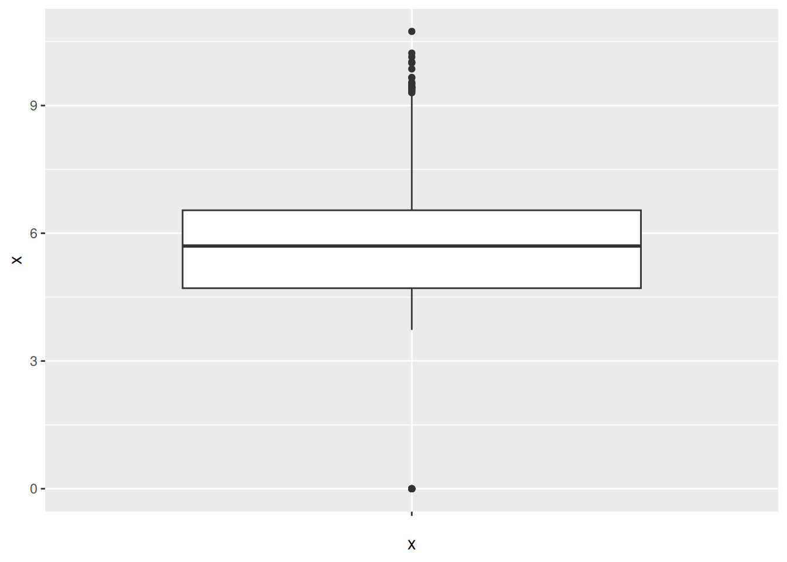
Figure 7.27: Ein erster Boxplot der x-Werte.
ggplot(dd, aes(x = x)) + geom_histogram(binwidth=0.5, boundary=0)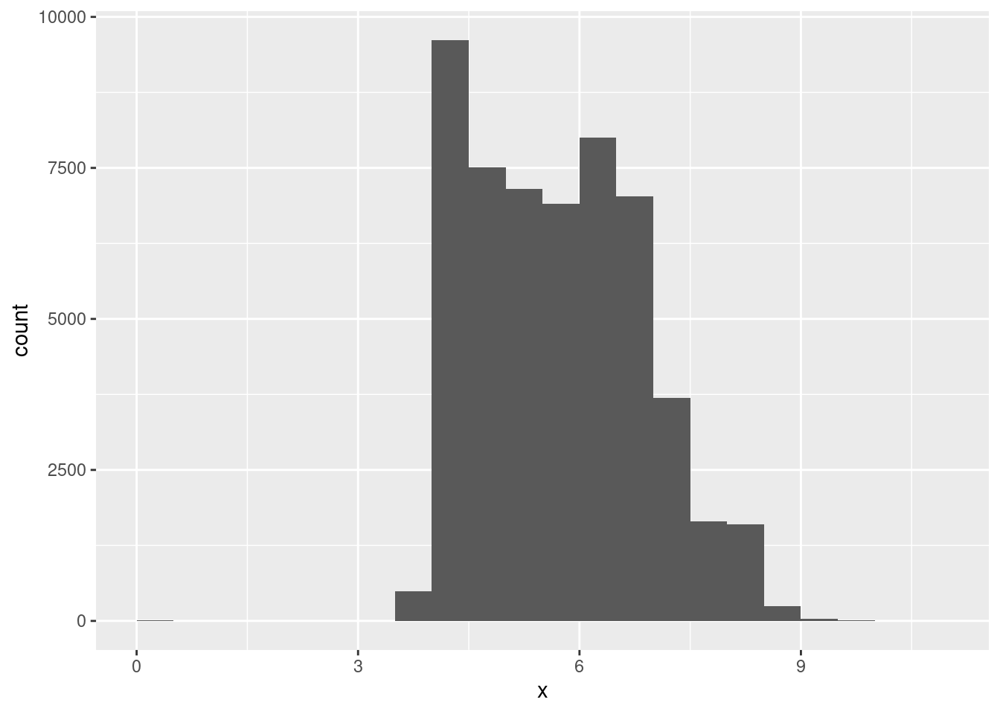
Figure 7.28: Ein Histogramm der x-Werte.
dd %>% count(cut_width(x, 0.5, boundary = 0))## # A tibble: 16 × 2
## `cut_width(x, 0.5, boundary = 0)` n
## <fct> <int>
## 1 [0,0.5] 8
## 2 (3.5,4] 488
## 3 (4,4.5] 9619
## 4 (4.5,5] 7504
## 5 (5,5.5] 7154
## 6 (5.5,6] 6908
## 7 (6,6.5] 8002
## 8 (6.5,7] 7032
## 9 (7,7.5] 3697
## 10 (7.5,8] 1654
## 11 (8,8.5] 1593
## 12 (8.5,9] 239
## 13 (9,9.5] 30
## 14 (9.5,10] 7
## 15 (10,10.5] 4
## 16 (10.5,11] 1Ähnlich können wir auch mit den y- und z-Werten verfahren. Es ist leicht, sich die fraglichen Datensätze genauer anzuschauen:
dd %>% filter(x == 0 | y == 0 | z == 0 )## # A tibble: 20 × 11
## nr carat cut color clarity depth table price x y z
## <int> <dbl> <ord> <ord> <ord> <dbl> <dbl> <int> <dbl> <dbl> <dbl>
## 1 2208 1 Premium G SI2 59.1 59 3142 6.55 6.48 0
## 2 2315 1.01 Premium H I1 58.1 59 3167 6.66 6.6 0
## 3 4792 1.1 Premium G SI2 63 59 3696 6.5 6.47 0
## 4 5472 1.01 Premium F SI2 59.2 58 3837 6.5 6.47 0
## 5 10168 1.5 Good G I1 64 61 4731 7.15 7.04 0
## 6 11183 1.07 Ideal F SI2 61.6 56 4954 0 6.62 0
## 7 11964 1 Very Good H VS2 63.3 53 5139 0 0 0
## 8 13602 1.15 Ideal G VS2 59.2 56 5564 6.88 6.83 0
## 9 15952 1.14 Fair G VS1 57.5 67 6381 0 0 0
## 10 24395 2.18 Premium H SI2 59.4 61 12631 8.49 8.45 0
## 11 24521 1.56 Ideal G VS2 62.2 54 12800 0 0 0
## 12 26124 2.25 Premium I SI1 61.3 58 15397 8.52 8.42 0
## 13 26244 1.2 Premium D VVS1 62.1 59 15686 0 0 0
## 14 27113 2.2 Premium H SI1 61.2 59 17265 8.42 8.37 0
## 15 27430 2.25 Premium H SI2 62.8 59 18034 0 0 0
## 16 27504 2.02 Premium H VS2 62.7 53 18207 8.02 7.95 0
## 17 27740 2.8 Good G SI2 63.8 58 18788 8.9 8.85 0
## 18 49557 0.71 Good F SI2 64.1 60 2130 0 0 0
## 19 49558 0.71 Good F SI2 64.1 60 2130 0 0 0
## 20 51507 1.12 Premium G I1 60.4 59 2383 6.71 6.67 0dd %>% filter(x > 30 | y > 30 | z > 30 )## # A tibble: 3 × 11
## nr carat cut color clarity depth table price x y z
## <int> <dbl> <ord> <ord> <ord> <dbl> <dbl> <int> <dbl> <dbl> <dbl>
## 1 24068 2 Premium H SI2 58.9 57 12210 8.09 58.9 8.06
## 2 48411 0.51 Very Good E VS1 61.8 54.7 1970 5.12 5.15 31.8
## 3 49190 0.51 Ideal E VS1 61.8 55 2075 5.15 31.8 5.12Als Nächstes wollen wir die fraglichen Werte auf NA setzen:
dd <- dd %>%
mutate (x=ifelse(x==0 | x>30, NA, x) ) %>%
mutate (y=ifelse(y==0 | y>30, NA, y) ) %>%
mutate (z=ifelse(z==0 | z>30, NA, z) )und danach die Daten überprüfen:
summary(dd$x)## Min. 1st Qu. Median Mean 3rd Qu. Max. NA's
## 3.730 4.710 5.700 5.732 6.540 10.740 8summary(dd$y)## Min. 1st Qu. Median Mean 3rd Qu. Max. NA's
## 3.680 4.720 5.710 5.734 6.540 10.540 9summary(dd$z)## Min. 1st Qu. Median Mean 3rd Qu. Max. NA's
## 1.07 2.91 3.53 3.54 4.04 8.06 21Beim Aufruf von geom_boxplot() erhalten wir nun die Warnung: „Removed 9 rows containing non-finite values (stat_boxplot).“:
dd %>% ggplot(aes(x="", y = x)) + geom_boxplot()## Warning: Removed 8 rows containing non-finite values (stat_boxplot).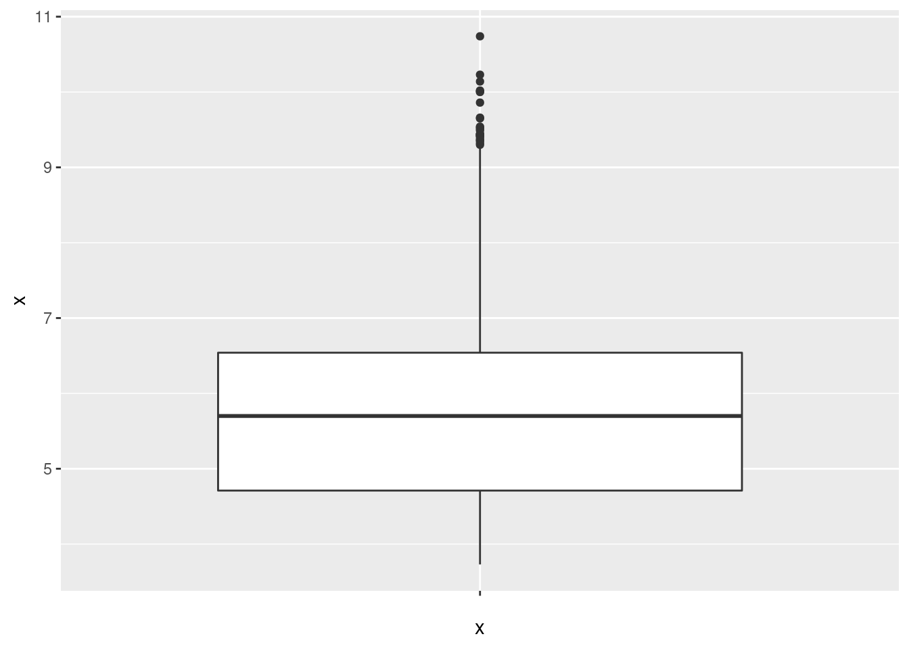
Zu Dokumentationszwecken speichern wir die fraglichen Datensätze ab und schreiben sie in eine CSV-Datei:
dd.na <- dd[!complete.cases(dd),]
dd.na## # A tibble: 23 × 11
## nr carat cut color clarity depth table price x y z
## <int> <dbl> <ord> <ord> <ord> <dbl> <dbl> <int> <dbl> <dbl> <dbl>
## 1 2208 1 Premium G SI2 59.1 59 3142 6.55 6.48 NA
## 2 2315 1.01 Premium H I1 58.1 59 3167 6.66 6.6 NA
## 3 4792 1.1 Premium G SI2 63 59 3696 6.5 6.47 NA
## 4 5472 1.01 Premium F SI2 59.2 58 3837 6.5 6.47 NA
## 5 10168 1.5 Good G I1 64 61 4731 7.15 7.04 NA
## 6 11183 1.07 Ideal F SI2 61.6 56 4954 NA 6.62 NA
## 7 11964 1 Very Good H VS2 63.3 53 5139 NA NA NA
## 8 13602 1.15 Ideal G VS2 59.2 56 5564 6.88 6.83 NA
## 9 15952 1.14 Fair G VS1 57.5 67 6381 NA NA NA
## 10 24068 2 Premium H SI2 58.9 57 12210 8.09 NA 8.06
## # … with 13 more rows
## # ℹ Use `print(n = ...)` to see more rowswrite_csv2(dd.na, "diamonds_fraglich1.csv")Danach bereinigen wir unsere Daten, in dem wir alle Datensätze löschen, die einen NA-Wert enthalten. Da dies nur einen äußerst geringen Anteil der gesamten Daten betrifft, verlieren wir hierdurch nicht viel Information.
dd <- dd %>% drop_na()7.6.1.3 Weitere Ausreißer
Wie man z.B. in Abbildung 7.27 sieht, gibt es in den x-Werten nach oben einige deutliche Ausreißer. Ob dies fehlerhafte oder fragliche Werte sind, können wir ohne spezielles Anwenderwissen nicht beurteilen. Für die weitere Analyse scheint es sinnvoll zu sein, die Zusammenhänge zwischen den x- und y-Werten genauer zu betrachten. Einen ersten Hinweis erhalten wir über die Korrelation:
cor(dd$x, dd$y)## [1] 0.9986573Es gibt also einen starken linearen Zusammenhang zwischen den x- und y-Werten. Dies sieht man auch im folgenden Plot:
ggplot(dd, aes(x = x, y = y)) +
geom_point(alpha =0.5) +
geom_smooth(method='lm')## `geom_smooth()` using formula 'y ~ x'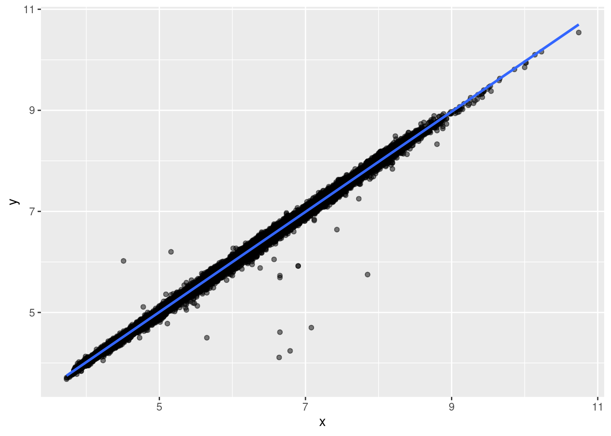
Figure 7.29: Zusammenhang der y- und x-Werte mit einer Ausgleichsgeraden (`ggplot2::geom_smooth() (Wickham 2016)).
Bei diesem Plot haben wir mithilfe von geom_smooth(method='lm') eine Ausgleichgerade erzeugt. ‘lm’ steht hier für „linear regression“. Im nächsten Abschnitt wollen wir mithilfe linearer Regression untersuchen, wie wir die Ausreißer unterhalb der Geraden herausfiltern.
7.6.1.4 Lineare Regression
Mithilfe linearer Regression können wir die Ausgleichsgerade in Abbildung 7.29 auch direkt berechnen. Dazu nutzen wir die mächtige Funktion lm():
mod_xy <- lm(y ~ 1 + x , data = dd)Der Ausdruck y ~ x beschreibt eine Formel (formula) in R. Eine Formel ist ein eigener Datentyp; sie ist typischerweise von der Form y ~ model, wobei model aus einer Reihe von Variablen (Einflussgrößen) besteht, die die Größe y beschreiben und für die entsprechenden Modell-Parameter bestimmt werden sollen (wie zum Beispiel durch Kleinste-Quadrat-Schätzer der Regressionskoeffizienten für lineare Modelle). In der folgenden Tabelle, in der einfache lineare Modelle aufgelistet sind, sind die zu bestimmenden Modell-Parameter: \(\alpha\), \(\beta\) und \(\gamma\).
| Formel | Modell |
|---|---|
y ~ x |
\(y = \beta x + \alpha\) |
y ~ x - 1 |
\(y = \beta x\) |
y ~ x, z |
\(y = \beta x + \gamma z + \alpha\) |
mod_xy##
## Call:
## lm(formula = y ~ 1 + x, data = dd)
##
## Coefficients:
## (Intercept) x
## 0.05109 0.99140Die Funktion lm() gibt eine Liste zurück, genauer ein Objekt der Klasse lm. In unserem einfachen Fall erhalten wir in der Ausgabe die Steigung und den y-Achsenabschnitt der gefundenen Ausgleichsgeraden. Im Listenelement coefficients sind die berechneten Modell-Parameter hinterlegt. In unserem Fall sind dies die Steigung und der y-Achsenabschnitt der berechneten Ausgleichsgeraden.
alpha <- mod_xy$coefficients[1]
beta <- mod_xy$coefficients[2]
ggplot(dd, aes(x = x, y = y)) +
geom_point(alpha = 0.5) +
geom_abline(intercept = beta, slope = alpha, color = "magenta", size = 1) +
ggtitle("Berechnete Ausgleichsgerade")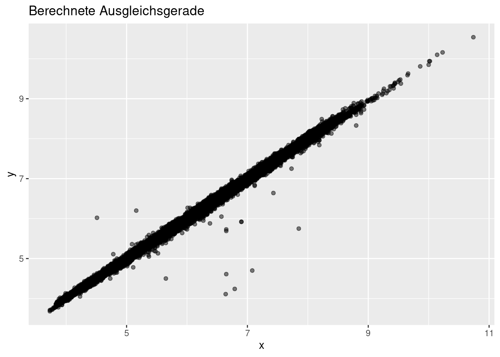
Figure 7.30: Zusammenhang der y- und x-Werte mit berechneter Ausgleichsgerade.
Die Residuen, also die Abstände zwischen den Datenpunkten und den jeweils korrespondierenden Punkten auf der Ausgleichsgeraden erhalten wir durch: dd$y - (beta * dd$x + alpha). (Zu einem Datenpunkt mit den Koordinaten (x,y) ist dies der Punkt auf der Ausgleichsgeraden mit derselben x-Koordinate.) Alternativ können wir diese Werte auch über das Objekt mod_xy erhalten:
residuen_manuell <- dd$y - (beta * dd$x + alpha) # Residuen manuell berechnet
all.equal(as.double(residuen_manuell), as.double(mod_xy$residuals))## [1] TRUEDie Funktion lm() berechnet noch viel mehr. Dies wird deutlich beim Aufruf von summary(mod_xy). Hierdurch erhält man zusätzliche Informationen über die Güte des Schätzers, die Residuen und die daraus abgeleiteten statistischen Kenngrößen (wie Standard-Fehler, t-Test- und F-Test-Werte), auf die wir aber hier nicht weiter eingehen werden:
summary(mod_xy)##
## Call:
## lm(formula = y ~ 1 + x, data = dd)
##
## Residuals:
## Min 1Q Median 3Q Max
## -2.54273 -0.04232 0.01352 0.03756 1.49768
##
## Coefficients:
## Estimate Std. Error t value Pr(>|t|)
## (Intercept) 0.0510912 0.0012934 39.5 <2e-16 ***
## x 0.9914041 0.0002215 4476.3 <2e-16 ***
## ---
## Signif. codes: 0 '***' 0.001 '**' 0.01 '*' 0.05 '.' 0.1 ' ' 1
##
## Residual standard error: 0.05757 on 53915 degrees of freedom
## Multiple R-squared: 0.9973, Adjusted R-squared: 0.9973
## F-statistic: 2.004e+07 on 1 and 53915 DF, p-value: < 2.2e-16In unserem Fall sehen wir, dass die Bestimmtheitsmaße Multiple R-squared und Adjusted R-squared nahe bei 1 liegen; dies bedeutet, dass das gewählte Modell (hier: ein einfaches lineares Modell) sehr gut zu den Daten passt. Dies überrascht nicht, da Abbildung 7.29 und Abbildung 7.30 denselben Schluss nahelegen.
Als Nächstes speichern wir die Residuen in einer neuen Spalte:
dd <- dd %>% mutate(res_xy = y - (beta * x + alpha))Im Folgenden wollen wir diejenigen Diamanten kennzeichnen, die bezüglich der Variablen res_xy auffällige Werte haben. Hierzu betrachten wir ähnlich wie bei einem Boxplot die Ausreißer:
schranke <- median(dd$res_xy) - 10 * IQR(dd$res_xy)
dd %>% filter( abs(res_xy) > abs(schranke)) %>% count()## # A tibble: 1 × 1
## n
## <int>
## 1 12IQR(dd$res_xy) gibt den mittleren Quartilsabstand zurück, entspricht also der Differenz quantile(dd\(res_xy, 0.75) - quantile(dd\)res_xy, 0.25). Der Faktor 10 wurde hier mehr oder weniger willkürlich gewählt. Wie die obige Ausgabe zeigt, gibt es 29 Ausreißer (beim Faktor 10). In dd fügen wir nun eine neue Spalte ein, die die Ausreißer kennzeichnet:
dd <- dd %>% mutate(Atypisch = "NONE") %>%
mutate(Atypisch = ifelse( abs(res_xy) > abs(schranke), "Shape_xy", Atypisch)) %>%
select(nr, Atypisch, everything())
dd$Atypisch <- as.factor(dd$Atypisch)Die auffälligen Diamanten geordnet nach den Residuen sind dann somit:
dd %>% filter(Atypisch != "NONE" ) %>%
arrange(res_xy)## # A tibble: 12 × 13
## nr Atypisch carat cut color clarity depth table price x y z
## <int> <fct> <dbl> <ord> <ord> <ord> <dbl> <dbl> <int> <dbl> <dbl> <dbl>
## 1 2275 Shape_xy 1.22 Premi… J SI2 62.6 59 3156 6.79 4.24 3.76
## 2 15236 Shape_xy 1.12 Premi… H VS1 61.6 58 6115 6.64 4.11 3.7
## 3 17827 Shape_xy 1.51 Fair H VS2 65.6 56 7188 7.08 4.7 4
## 4 19503 Shape_xy 1.57 Fair H VS1 67.3 66 8133 7.85 5.75 3.87
## 5 33103 Shape_xy 0.34 Good E VS2 57 61 816 6.65 4.61 2.64
## 6 49916 Shape_xy 0.7 Premi… F SI1 62.6 55 2184 5.65 4.5 3
## 7 14030 Shape_xy 1.22 Ideal H SI2 61.1 57 5703 6.9 5.92 4.22
## 8 14345 Shape_xy 1.22 Ideal H SI2 61.1 57 5807 6.9 5.92 4.22
## 9 49876 Shape_xy 0.7 Premi… H SI1 62 61 2176 6.65 5.69 3.46
## 10 51626 Shape_xy 0.7 Premi… E SI1 61.2 62 2396 6.65 5.73 3.48
## 11 48833 Shape_xy 0.53 Ideal F VVS2 62.7 56 2030 5.16 6.2 3.25
## 12 34283 Shape_xy 0.39 Premi… H SI2 61.2 58 468 4.51 6.02 4.44
## # … with 1 more variable: res_xy <dbl>
## # ℹ Use `colnames()` to see all variable namesDie Ergebnisse können leicht visualisiert werden:
ggplot(dd, aes(x = x, y = y, color=Atypisch)) +
geom_point(alpha = 0.5) +
scale_colour_brewer(palette="Dark2") +
geom_abline(intercept = alpha, slope = beta,size = 1) +
ggtitle("Auffällige x-, und y-Werte")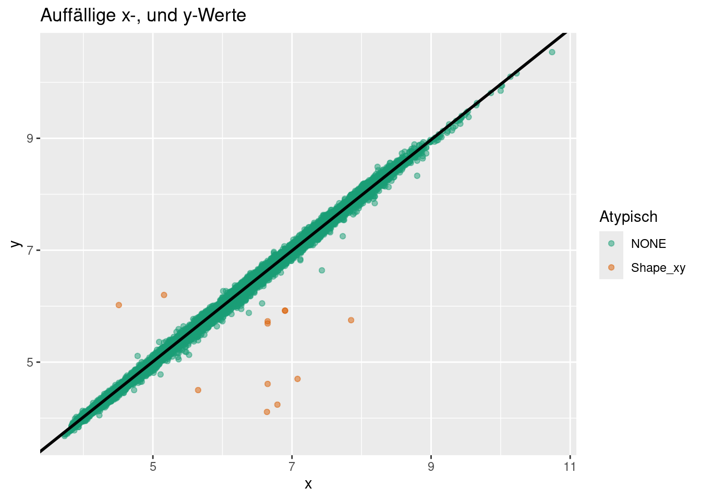
Figure 7.31: Zusammenhang der y- und x-Werte inklusive farbliche Markierung der Ausreißer.
7.6.1.5 Vergleich der x- und z-Variablen
Ähnlich kann nun auch beim Vergleich der x- und z-Variablen vorgegangen werden. Wie der nächste Plot zeigt, scheint es auch hier Ausreißer zu geben:
ddd <- dd %>% filter(Atypisch == "NONE" )
ggplot(ddd, aes(x = x, y = z)) +
geom_point(alpha =0.5) +
geom_smooth(method='lm')## `geom_smooth()` using formula 'y ~ x'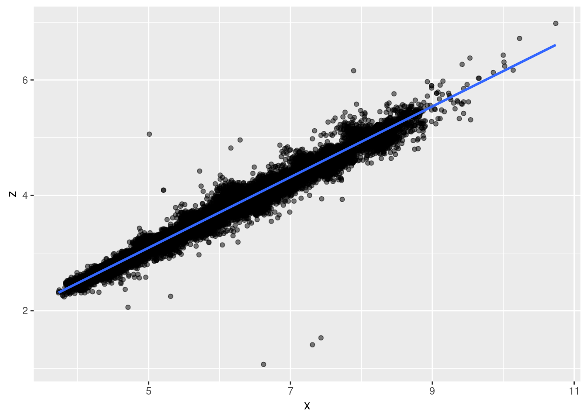
Figure 7.32: Zusammenhang der z- und x-Werte inklusive farbliche Markierung der Ausreißer.
Die restliche Analyse der x- und z-Variablen und der y- und z-Variablen wird als zusätzliche Übungsaufgabe gestellt.
7.6.2 Allgemeiner Überblick
In diesem Kapitel wollen wir kurz verschiedene Möglichkeiten vorstellen, wie man sich relativ schnell einen ersten groben Überblick über einen Datensatz verschaffen kann. Als Beispiel benutzten wir den Datensatz diamonds (Wickham 2016). Da diamonds ein Tibble ist, ist es leicht, erste Informationen zu erhalten (Für einen normalen Data Frame wäre str() die vielleicht bessere Lösung.):
diamonds## # A tibble: 53,940 × 10
## carat cut color clarity depth table price x y z
## <dbl> <ord> <ord> <ord> <dbl> <dbl> <int> <dbl> <dbl> <dbl>
## 1 0.23 Ideal E SI2 61.5 55 326 3.95 3.98 2.43
## 2 0.21 Premium E SI1 59.8 61 326 3.89 3.84 2.31
## 3 0.23 Good E VS1 56.9 65 327 4.05 4.07 2.31
## 4 0.29 Premium I VS2 62.4 58 334 4.2 4.23 2.63
## 5 0.31 Good J SI2 63.3 58 335 4.34 4.35 2.75
## 6 0.24 Very Good J VVS2 62.8 57 336 3.94 3.96 2.48
## 7 0.24 Very Good I VVS1 62.3 57 336 3.95 3.98 2.47
## 8 0.26 Very Good H SI1 61.9 55 337 4.07 4.11 2.53
## 9 0.22 Fair E VS2 65.1 61 337 3.87 3.78 2.49
## 10 0.23 Very Good H VS1 59.4 61 338 4 4.05 2.39
## # … with 53,930 more rows
## # ℹ Use `print(n = ...)` to see more rowsInformativ ist auch:
summary(diamonds)## carat cut color clarity depth
## Min. :0.2000 Fair : 1610 D: 6775 SI1 :13065 Min. :43.00
## 1st Qu.:0.4000 Good : 4906 E: 9797 VS2 :12258 1st Qu.:61.00
## Median :0.7000 Very Good:12082 F: 9542 SI2 : 9194 Median :61.80
## Mean :0.7979 Premium :13791 G:11292 VS1 : 8171 Mean :61.75
## 3rd Qu.:1.0400 Ideal :21551 H: 8304 VVS2 : 5066 3rd Qu.:62.50
## Max. :5.0100 I: 5422 VVS1 : 3655 Max. :79.00
## J: 2808 (Other): 2531
## table price x y
## Min. :43.00 Min. : 326 Min. : 0.000 Min. : 0.000
## 1st Qu.:56.00 1st Qu.: 950 1st Qu.: 4.710 1st Qu.: 4.720
## Median :57.00 Median : 2401 Median : 5.700 Median : 5.710
## Mean :57.46 Mean : 3933 Mean : 5.731 Mean : 5.735
## 3rd Qu.:59.00 3rd Qu.: 5324 3rd Qu.: 6.540 3rd Qu.: 6.540
## Max. :95.00 Max. :18823 Max. :10.740 Max. :58.900
##
## z
## Min. : 0.000
## 1st Qu.: 2.910
## Median : 3.530
## Mean : 3.539
## 3rd Qu.: 4.040
## Max. :31.800
## Mithilfe von Korrelationen kann die lineare Abhängigkeit der einzelnen Variablen untersucht werden:
cor(diamonds)
#R> Fehler in cor(diamonds) : 'x' muss numerisch seinAlso besser:
d <- diamonds %>% select(carat, depth, price,x,y,z)
cor(d) ## carat depth price x y z
## carat 1.00000000 0.02822431 0.9215913 0.97509423 0.95172220 0.95338738
## depth 0.02822431 1.00000000 -0.0106474 -0.02528925 -0.02934067 0.09492388
## price 0.92159130 -0.01064740 1.0000000 0.88443516 0.86542090 0.86124944
## x 0.97509423 -0.02528925 0.8844352 1.00000000 0.97470148 0.97077180
## y 0.95172220 -0.02934067 0.8654209 0.97470148 1.00000000 0.95200572
## z 0.95338738 0.09492388 0.8612494 0.97077180 0.95200572 1.00000000Für die nächste Grafik in Abbildung 7.33 wollen wir das R-Paket GGally (Schloerke et al. 2021) benutzen, das ggplot2 (Wickham 2016) erweitert. Es ist nicht Bestandteil von tidyverse (Wickham et al. 2019) und muss daher getrennt installiert werden. Aus dem GGally-Paket wollen wir lediglich die Funktion ggpairs() nutzen, die in einer Matrixform je zwei Spalten vergleicht und grafisch darstellt. Insgesamt werden dabei 10×10 Teilgrafiken automatisch erzeugt. Wird der komplette Datensatz benutzt, dann braucht die Erzeugung dieser Grafik viel Zeit und manche Teilgrafiken sind auch durch die vielen Punkte nicht mehr aussagekräftig. Daher werden für die Erzeugung der Grafik lediglich 5000 zufällig ausgewählte Datensätze zugrunde gelegt (5000 ist hier ein willkürlich gewählter Wert).
diamondsSample <- sample_n(diamonds, 5000)
diamondsSample %>%
ggpairs(title = "Diamonds", mapping =ggplot2::aes(alpha = 0.2))## `stat_bin()` using `bins = 30`. Pick better value with `binwidth`.
## `stat_bin()` using `bins = 30`. Pick better value with `binwidth`.
## `stat_bin()` using `bins = 30`. Pick better value with `binwidth`.
## `stat_bin()` using `bins = 30`. Pick better value with `binwidth`.
## `stat_bin()` using `bins = 30`. Pick better value with `binwidth`.
## `stat_bin()` using `bins = 30`. Pick better value with `binwidth`.
## `stat_bin()` using `bins = 30`. Pick better value with `binwidth`.
## `stat_bin()` using `bins = 30`. Pick better value with `binwidth`.
## `stat_bin()` using `bins = 30`. Pick better value with `binwidth`.
## `stat_bin()` using `bins = 30`. Pick better value with `binwidth`.
## `stat_bin()` using `bins = 30`. Pick better value with `binwidth`.
## `stat_bin()` using `bins = 30`. Pick better value with `binwidth`.
## `stat_bin()` using `bins = 30`. Pick better value with `binwidth`.
## `stat_bin()` using `bins = 30`. Pick better value with `binwidth`.
## `stat_bin()` using `bins = 30`. Pick better value with `binwidth`.
## `stat_bin()` using `bins = 30`. Pick better value with `binwidth`.
## `stat_bin()` using `bins = 30`. Pick better value with `binwidth`.
## `stat_bin()` using `bins = 30`. Pick better value with `binwidth`.
## `stat_bin()` using `bins = 30`. Pick better value with `binwidth`.
## `stat_bin()` using `bins = 30`. Pick better value with `binwidth`.
## `stat_bin()` using `bins = 30`. Pick better value with `binwidth`.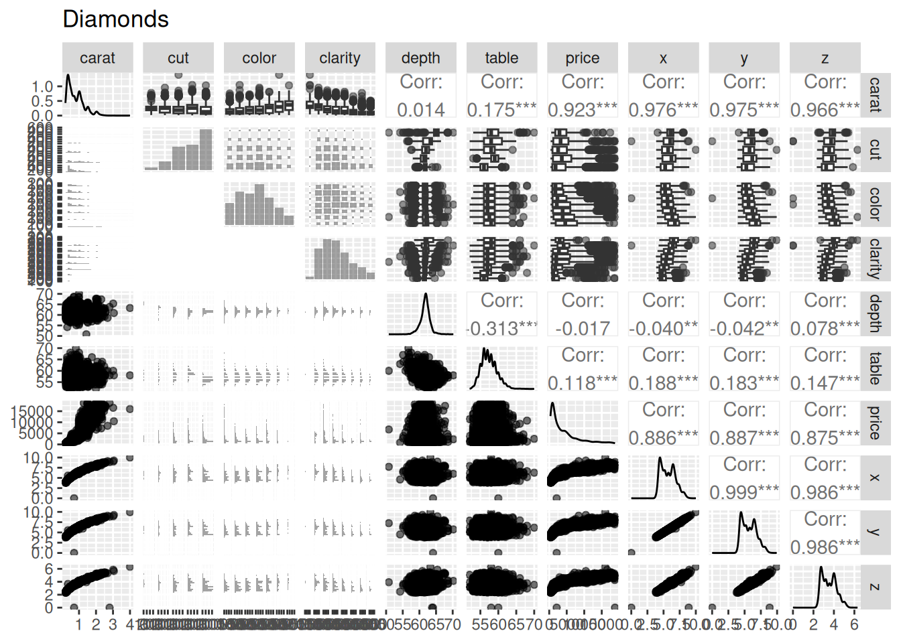
Figure 7.33: Mit ggpairs() erstellte Auswertung.
Bearbeiten Sie folgende Aufgabe:
- Erklären Sie die Grafiken in Abbildung 7.33.